🏠
日
月
縦書き／横書き
この記事は、『朝日新聞』だけでなく『アサヒグラフ』（一九三七年十一月十日・第一九号）でも報道されていました。それにもかかわらず、一九七一年八月から十二月まで『朝日新聞』に連載された「中国の旅」の執筆者として一躍有名になった本多勝一氏は、『中国の日本軍』（本多勝一著、一九七二年）の第四部「南京大虐殺」のなかで、次の写真と同じ写真を掲載して「婦女子を狩り集めて連れて行く日本兵たち。強姦や輪姦は七、八歳の幼女から、七十歳を越えた老女にまで及んだ。」と捏造キャプションをつけ、「集団で輪姦された上、皆殺しにされた現場の写真→」と続け、矢印をつけたページを見ると、裸の集団虐殺写真を見開きで大きく掲載しています。
同書は、前年の「中国の旅」の写真版を意識して出版したと思われますが、写真の撮影者や年月日・場所を明らかにしていません。
そして冒頭には、「日中両国人民の真の友好促進のために本書をささげる――著者」、そして最後に「一九七二年七月七日（七・七事変の日）」とあり、「南京大虐殺」があったと叫んでいた者たちは、日支事変の起点を廬溝橋事件に特定したいとの思いがにじみ出ています。
同書が発行された年月日は一九七二年七月二十日で、同九月十日には第五刷りになっていました。
同書が贖罪意識を煽ってから約二カ月後の九月二十九日に日中共同声明が調印され、外交関係が樹立されました。それはまた、日中間で戦後の情報戦がスタートしたことを意味していたのです。
| ひと目でわかる日韓・日中 歴史の真実 | |
| 水間 政憲 | |
| PHP研究所 (2012) | |
ひと目でわかる日韓・日中 歴史の真実
水間政憲
水間政憲
ラダ・ビノード・パール国際極東軍事裁判所インド代表判事は、日本人が「多数派判決」（日本罪悪史観）によって無意識にすり込まれる悪影響を危惧して、自身の判決文に、捏造された歴史認識を解き放つ言葉を残してくれていました。
時が熱狂と偏見をやわらげたあかつきには、
時が熱狂と偏見をやわらげたあかつきには、
また理性が、虚偽からその仮面を剥ぎとったあかつきには、そのときこそ、正義の女神は、
その秤を平衡に保ちながら、
過去の賞罰の多くに、
そのところを変えることを要求するであろう。
（「パール判決文」より）
は じ め に
私たち日本人が自信を無くした要因に、戦後、日本列島を覆い尽くしてきた「日本罪悪史観」が大きく影響しています。連合国最高司令部に押し付けられた憲法の前文に、「平和を愛する諸国民の公正と信義に信頼して、われらの安全と生存を保持しようと決意した」とあります。
現在、我が国固有の領土である竹島を不法占拠している韓国、そして尖閣諸島を強奪しようとしている中国に、「公正と信義」を寄せられる国民は、いまやほとんどいないでしょう。
憲法と同じように押し付けられた「歴史認識」は、人生観の主要部分を形成しており、それを自己否定することは、なかなか出来るものではありません。
そこで本書では、皆様方が自ら観て判断していただけるように、一次史料を提示しました。
これらの史料が日本列島の隅々まで行き渡り、個々人が誇りを取り戻したとき、我が国が力強く復興することを願ってやみません。
近現代史研究家 水間政憲
ひと目でわかる日韓・日中 歴史の真実 目次
『大韓地誌』に添付されていた地図でも竹島は日本の領土と証明されていた
１９５１年、ディーン・ラスク米国務次官補は韓国への書簡で竹島を日本領と断言していた
世界各国の地図で竹島（Takeshima）は日本領になっている
韓国は、竹島と日本海を世界地図から削除しようと国際的にロビー活動をしている
国民を震撼させた通州の惨劇
中国の挑発行為が戦争へエスカレート
日支事変は中国側の一方的な挑発が原因だった
事変以来八十九日目とは！
畑と集落の行き帰りや稲刈り綿摘みも日本軍が保護していた
毒ガス使用の実態と敵兵の追悼
交戦地区の子供たちも日本兵を怖がっていなかった
上海英字紙が日本軍に感謝
日本軍を信頼して続々と戻ってきた避難民
「南京はパニック」と報じていた『ニューヨーク・タイムズ』の記事
敵の戦死者を慰霊するのは日本軍の伝統だった
日本軍を乗せて操船する中国人
句容に入る大野部隊
蒋介石が部下を置き去りにして南京から遁走
『ニューヨーク・タイムズ』が報じた支那兵による南京の破壊と放火
支那軍の焦土政策まで報じられていた
投降勧告を拒否した唐生智南京防衛司令官の責任
戦時国際法に違反して「毒ガス」を使用した中国
歴史の真実を撮影したカメラマン
水も漏らさぬ報道体制だった
松井大将は中国の文化財を護る厳命を発していた
中山陵を保持した松井大将の指令
南京城陥落
南京城陥落翌日の城内の模様「寛容慈悲ノ態度ヲ取リ之ヲ宣撫愛護セヨ」
十二月十五日の南京城内の風景
十二月十五日、南京安全区附近の情景
十二月十五日の南京安全区内の情景
十二月十五日の南京安全区の情景
十二月十七日、南京入城式
南京入城式後の安全区の情景
東京裁判の南京判決は二通りある
きのふの敵に温情
南京は微笑む
十二月二十日、南京に日本から届けられた「こも樽」
陥落後の南京は急速に治安が回復していた
手を握り合って越年――日本から失われつつある情景
南京に自治委員会が誕生
陳漢森より土井中佐への感謝状
外国のメディアは何を見て何を報道していたか
『朝日新聞』は「南京大虐殺」を知っていたのか
アリソン米国領事「殴打事件」
ＮＨＫ洗脳ラジオ放送『眞相箱』の支離滅裂
東京裁判に「虐殺の証拠」として提出された埋葬記録は「戦死者」だった
「南京大虐殺」の嘘は一九八五年に明らかになっていた
「南京大虐殺」の証拠と大騒ぎした「郵便袋虐殺事件」は最高裁判所で捏造が確定
松井石根大将はＡ級戦犯ではなかった
『朝日新聞』も犠牲者数は特定できない
慰安婦への「謝罪・賠償」宣伝が米紙に続々掲載
韓国では売春を求めるデモや集会が繰り返されている
朝鮮人娼婦の生活権に配慮していた警察署
昭和八年、朝鮮半島の道議会議員の八一％は朝鮮人だった
道議会議員立候補者の内訳
南総統は朝鮮人の声を真摯に聞いていた
貴婦人を装って誘拐していた朝鮮人
戦前の朝鮮半島で娼婦の衛生面にも気を使っていた警察官
目的のために歴史史料を歪曲した『朝日新聞』
警察は不正業者を徹底的に取り締まっていた
マスメディアにはびこる「報道しない自由」
犯罪の温床を徹底的に改善していた警察
ソウルの秘密クラブを摘発するきっかけは少女の告発だった
朝鮮人の拉致誘拐犯は南洋方面にも女性たちを売り飛ばしていた
金日成も日本人を拉致していた
若い女性まで誘拐に手を染めていた
拉致誘拐事件に偽刑事も現れる
貧しい田舎娘が悪徳業者のターゲットに
当時の治安状況が把握できる調査記事
若者の精神性を破壊する教科書
『東亜日報』：日本統治以前の衝撃的な記事
『東亜日報』：良家の少女を誘拐して満洲に売り飛ばす寸前に逮捕
「慰安婦問題」を乗り越えなければ日本精神は消滅してしまう
『朝日新聞』四十年間の「宿痾」
はじめに
尖閣諸島 動かぬ証拠「中国」中国は自国の地図に尖閣諸島を日本の領土と記していた
尖閣諸島 動かぬ証拠「台湾」台湾の地図も尖閣諸島を日本の領土と記していた
尖閣諸島を日本領と記載した中華民国からの感謝状尖閣諸島問題のこれからの展望
竹島は日本の領土：動かぬ証拠韓国の教科書『大韓地誌』でも竹島は日本の領土だった
『大韓地誌』に添付されていた地図でも竹島は日本の領土と証明されていた
１９５１年、ディーン・ラスク米国務次官補は韓国への書簡で竹島を日本領と断言していた
世界各国の地図で竹島（Takeshima）は日本領になっている
韓国は、竹島と日本海を世界地図から削除しようと国際的にロビー活動をしている
南京問題：動かぬ証拠日支事変から南京攻略戦へ
国民を震撼させた通州の惨劇
中国の挑発行為が戦争へエスカレート
日支事変は中国側の一方的な挑発が原因だった
事変以来八十九日目とは！
畑と集落の行き帰りや稲刈り綿摘みも日本軍が保護していた
毒ガス使用の実態と敵兵の追悼
交戦地区の子供たちも日本兵を怖がっていなかった
上海英字紙が日本軍に感謝
日本軍を信頼して続々と戻ってきた避難民
「南京はパニック」と報じていた『ニューヨーク・タイムズ』の記事
敵の戦死者を慰霊するのは日本軍の伝統だった
日本軍を乗せて操船する中国人
句容に入る大野部隊
蒋介石が部下を置き去りにして南京から遁走
『ニューヨーク・タイムズ』が報じた支那兵による南京の破壊と放火
支那軍の焦土政策まで報じられていた
投降勧告を拒否した唐生智南京防衛司令官の責任
戦時国際法に違反して「毒ガス」を使用した中国
歴史の真実を撮影したカメラマン
水も漏らさぬ報道体制だった
松井大将は中国の文化財を護る厳命を発していた
中山陵を保持した松井大将の指令
南京城陥落
南京城陥落翌日の城内の模様「寛容慈悲ノ態度ヲ取リ之ヲ宣撫愛護セヨ」
十二月十五日の南京城内の風景
十二月十五日、南京安全区附近の情景
十二月十五日の南京安全区内の情景
十二月十五日の南京安全区の情景
十二月十七日、南京入城式
南京入城式後の安全区の情景
東京裁判の南京判決は二通りある
きのふの敵に温情
南京は微笑む
十二月二十日、南京に日本から届けられた「こも樽」
陥落後の南京は急速に治安が回復していた
手を握り合って越年――日本から失われつつある情景
南京に自治委員会が誕生
陳漢森より土井中佐への感謝状
外国のメディアは何を見て何を報道していたか
『朝日新聞』は「南京大虐殺」を知っていたのか
アリソン米国領事「殴打事件」
ＮＨＫ洗脳ラジオ放送『眞相箱』の支離滅裂
東京裁判に「虐殺の証拠」として提出された埋葬記録は「戦死者」だった
「南京大虐殺」の嘘は一九八五年に明らかになっていた
「南京大虐殺」の証拠と大騒ぎした「郵便袋虐殺事件」は最高裁判所で捏造が確定
松井石根大将はＡ級戦犯ではなかった
『朝日新聞』も犠牲者数は特定できない
慰安婦問題、動かぬ証拠アメリカにも「従軍慰安婦」の碑が
慰安婦への「謝罪・賠償」宣伝が米紙に続々掲載
韓国では売春を求めるデモや集会が繰り返されている
朝鮮人娼婦の生活権に配慮していた警察署
昭和八年、朝鮮半島の道議会議員の八一％は朝鮮人だった
道議会議員立候補者の内訳
南総統は朝鮮人の声を真摯に聞いていた
貴婦人を装って誘拐していた朝鮮人
戦前の朝鮮半島で娼婦の衛生面にも気を使っていた警察官
目的のために歴史史料を歪曲した『朝日新聞』
警察は不正業者を徹底的に取り締まっていた
マスメディアにはびこる「報道しない自由」
犯罪の温床を徹底的に改善していた警察
ソウルの秘密クラブを摘発するきっかけは少女の告発だった
朝鮮人の拉致誘拐犯は南洋方面にも女性たちを売り飛ばしていた
金日成も日本人を拉致していた
若い女性まで誘拐に手を染めていた
拉致誘拐事件に偽刑事も現れる
貧しい田舎娘が悪徳業者のターゲットに
当時の治安状況が把握できる調査記事
若者の精神性を破壊する教科書
『東亜日報』：日本統治以前の衝撃的な記事
『東亜日報』：良家の少女を誘拐して満洲に売り飛ばす寸前に逮捕
「慰安婦問題」を乗り越えなければ日本精神は消滅してしまう
『朝日新聞』四十年間の「宿痾」
あとがき
装丁 印牧真和
尖閣諸島動かぬ証拠「中国」
中国は自国の地図に尖閣諸島を日本の領土と記していた
最近、中国は、尖閣諸島を「中国の核心的利益」と公言するまでになりました。
そもそも尖閣諸島は、李登輝元台湾総統が「歴史的に日本の領土」と断言している通りなのです。
中国は、一九六八年、アジア極東経済委員会（ＥＣＡＦＥ）が尖閣諸島周辺海域の海底を調査し、ペルシャ湾級の石油・天然ガスが埋蔵されている可能性を指摘するまで、一度も尖閣諸島の領有権を主張したことはありませんでした。
そこで、中国が領有権を主張するために始めたことは、過去に中国が「尖閣諸島・魚釣島」と日本名で表記して発行していた都合の悪い地図を焚書することでした（図１参照 国境線も、台湾と与那国島の中間に引かれています）。
図１と同じ出版社が一九七二年に発行した地図（図２）では、「釣魚島・赤尾礁」などと中国名表記に変更し、国境線も中間線を無視しています。
清時代の一九〇五年の地図（図３）では、「尖閣諸島」を中国の領土と記していないにもかかわらず、一九八七年に中国で発行した『中国歴史地図集』（図４）では「（福建）」と記して、清時代から福建の行政区だったように見せかけています。
尖閣諸島動かぬ証拠「台湾」
台湾の地図も尖閣諸島を日本の領土と記していた
台湾が尖閣諸島の領有権を主張し始めたのは、日米沖縄返還交渉の過程で、当時の佐藤栄作首相が、米国側から申し入れられた「尖閣諸島周辺海域の石油資源共同開発」を蹴ったことに起因しています。
その後、米国石油メジャーは、台湾政府を説得して「尖閣諸島周辺海域の採掘権」を取得しています。佐藤首相が同海域の「日米共同開発」を受け入れていれば、尖閣問題は存在しなかったでしょう。
台湾の場合、戦争になったときの基準地図としても使用できる『世界地図集』（図１、一九六五年発行）を、国防研究院と中国地学研究所が作成しています。その地図では、日本名の「尖閣」と表記しているだけでなく、台湾と与那国島の中間線も台湾側に弧を描いて記されており、尖閣諸島は完璧に日本の領土と認識していました。
ところが、一九八七年発行の『国民中学 地理』教科書（図２）で確認すると、一九六七年発行の教科書に記されていなかった尖閣諸島を、台湾側の呼称の「釣魚臺列嶼」と表記しています。
いずれにしても中国と台湾には、尖閣諸島の領有権を示す国際的に通用する歴史的な資料は何もないのです。
尖閣諸島を日本領と記載した中華民国からの感謝状
感 謝 状
中華民国九年（大正九年）五月二十日
中国と台湾が継承した中華民国の行政区には、尖閣諸島が含まれていなかったことを示す動かぬ証拠が、一九二〇年（大正九年）に発行していたこの感謝状です。一八九五年（明治二十八年）、日本政府が尖閣諸島が無主の地であることを確認し、日本の領土に編入したことを中華民国も承認していた事実を表しています。当時の魚釣島でカツオ節工場を経営していた地権者の古賀善次氏と、石垣村長豊川善左氏を含め四名に送られたものです。
感 謝 状
「中華民国八年（大正八年）の冬に、福建省・恵安県の漁民郭合順ら三一人が海上で暴風の難に遭って漂流し、日本帝国沖縄県八重山郡 尖閣列島内の和洋島（魚釣島の別称）に漂着した。
その際、八重山郡石垣村役所の玉代勢孫伴君らが、熱心に救護に当たってくれて、遭難漁民らを故国に生還せしめるまで世話をしてくれたことに深く感謝し、ここにこの感謝状を贈る」
中華民国長崎領事 馮 冕印
中華民国九年（大正九年）五月二十日
中国と台湾が継承した中華民国の行政区には、尖閣諸島が含まれていなかったことを示す動かぬ証拠が、一九二〇年（大正九年）に発行していたこの感謝状です。一八九五年（明治二十八年）、日本政府が尖閣諸島が無主の地であることを確認し、日本の領土に編入したことを中華民国も承認していた事実を表しています。当時の魚釣島でカツオ節工場を経営していた地権者の古賀善次氏と、石垣村長豊川善左氏を含め四名に送られたものです。
尖閣諸島問題のこれからの展望
――尖閣募金――
そもそも尖閣問題は、「日中国交正常化」（一九七二年）を実現し、歴史に名前を残す功名心にかられた田中角栄元首相が、尖閣諸島に関する中国の理不尽な主張を先送りにしたことによります。
一九六八年から始めた尖閣諸島海域の調査結果は、石油の推定埋蔵量一〇九五億バレル（当時、日本の消費量の約六十年分にあたる量）でした。
二〇〇九年度の日本の年間石油消費量一六億六〇〇万バレルを、一バレル＝一〇〇ドル（一ドル＝八〇円）で換算すると、八七六兆円（六十七年分）になります。この金額は、我が国の国債発行残高とほぼ同じですので、採掘を開始すれば、消費税や福祉費の問題などすべて解決できるのです。
中国と台湾で発行した地図（図１）は、我が国で中国人が自由に出入りできない場所に、一冊だけ残っていたものを、筆者が見つけ出したものです。中国人はポケットに数百万円をねじ込んで神田神保町などを徘徊して「都合の悪い尖閣地図」を買い漁り、焚書を繰り返していたのです。そこで本書を、皆様方のお知り合いの医院や喫茶店のブックスタンドに置いていただき、尖閣諸島の「実効支配」を確実なものにしていただければ、と切にお願いする次第です。
実効支配をより確実にするには、東京都の尖閣募金に参加し、尖閣を守る意思を示すことが一番大事です。
――尖閣募金――
東京都尖閣諸島寄附金受付先
http://www.chijihon.metro.tokyo.jp/senkaku.htm
みずほ銀行 東京都庁出張所（店番号777）
口座名「東京都尖閣諸島寄附金」
普通預金 口座番号 1053860
ゆうちょ銀行
加入者名「東京都尖閣諸島寄附金」
口座番号 00110-9-386056
連絡先：東京都知事本局尖閣諸島寄附担当
直通電話 ０３－５３８８－２２０６
ＦＡＸ ０３－５３８８－１２１５
郵送宛先 〒１６３－８００１ 東京都知事本局尖閣諸島寄附担当
電話受付時間 月～金 9:00～18:00（国民の祝日等の閉庁日は除きます）
韓国の教科書『大韓地誌』でも竹島は日本の領土だった
竹島は、国際法の「無主地先占」の原則に従って、一九〇五年に閣議決定を行い、島根県に編入されていました。
金大中元大統領は「日露戦争当時の我が国は事実上、日本の支配下にあり反論できなかった」と二〇〇五年五月二十三日、東京大学主催のシンポジウムで述べました。
しかし、日露戦争（一九〇四年）以前に発行していた教科書『大韓地誌』には、見ての通り大韓民国の東端を東経一三〇度三五分と記しており、竹島（東経一三一度五二分）は含まれていなかったのです。
最近、韓国は「日本海と東海の併記」を目論んで国際的にロビー活動をしていますが、同教科書を見ると、「日本海」と単独で表記していました。
『大韓地誌』に添付されていた地図でも竹島は日本の領土と証明されていた
図１は、２００３年度版韓国の高校の地図帳に収録されている鬱陵島の周辺海域です。そして図３は、『大韓地誌』に添付されていた第12篇「江原道」の地図を拡大したものです。
最近、韓国は竹島の古い名称を「于山」と主張していますが、于山は図２を見ると鬱陵島の北東に隣接しており、竹島ではなく現在の「竹嶼」を指しています。于山は、図１の鬱陵島の北東に隣接している同じ島（竹嶼）だ、とひと目で確認できます。
韓国の国定高校歴史教科書が竹島は日本の領土と証明していた
図１と図２を比較してみると一目瞭然ですが、国定教科書に掲載されている史料は独島（于山）が竹島とまったく関係ないことを証明しています。
図２で、竹島は右端の下に位置しており、韓国は国定教科書でも歴史を改竄していることが明らかになりました。
これほどの間違いが明らかになると、韓国国内から「竹島は日本の領土だった」との声が挙がる可能性が、千に一つくらい出てくるかもしれません。
１９５１年、ディーン・ラスク米国務次官補は韓国への書簡で竹島を日本領と断言していた
韓国政府は、一九五一年九月の「サンフランシスコ講和条約」の署名を前にして、アチソン米国務長官宛に、日本の放棄する領土に「竹島」の放棄を盛り込むことを要求しました。
これに対して米国側責任者のディーン・ラスク国務次官補は、同年八月九日、韓国政府へ文書で回答しました。「竹島は一九〇五年以降、島根県の管轄下にあり、韓国から過去に領土権の主張はなされていない」と、韓国への帰属を明確に否定していたのです。
この米国の公式見解は、米公文書集『Foreign Relations of the United States 1951』の一二〇二～一二〇三ページにも掲載されています。米上下両院議員にこの見解を説明すると、瞬時に納得してもらえるとのことです。
韓国は、竹島と日本海を世界地図から削除しようと国際的にロビー活動をしている
二〇一二年一月、米ヴァージニア州議会で、教科書に日本海と「東海」を併記する法案が審議され、賛否同数で議長が反対に回って否決されました。それは、インターネットでの米在住邦人女性と国内外の同志の皆様の、ヴァージニア州議会議員へのロビー活動なくしてあり得ませんでした。
韓国政府は、米国議会図書館所蔵古地図調査で、十九世紀以前の日本海周辺の古地図の六六％が「朝鮮海」または「東海」と表記され、「日本海」と表記した地図は一四％にすぎないと公言してロビー活動をしていたのです。
ところが、同じ米国議会図書館の史料を日本の外務省が二〇〇五年に調査した結果、同図書館に所蔵されている一三〇〇年～一九〇〇年まで「日本海海域」に名称が付けられていた地図一四三五枚の内訳は、「日本海」と表記した地図が一一一〇枚（七七・四％）あり、「朝鮮海」と表記されていたものは一八八枚（一三・一％）、「東海」と表記した地図はわずか二枚（〇・一％）だけだったのです。
ここでも韓国政府は、歴史を改竄していたことが明らかになりました。
発行時期が十九世紀になると地図・地図帳全体の八二・四％にあたる一〇五九枚が「日本海」との呼称を用いていたことも明らかになっていました。この情報を米在住邦人女性に提供したことにより、一気に形勢が逆転して、ヴァージニア州議会で同法案を否決することができたのです。
インターネットの普及により、正確な情報が武器になる時代に突入しました。そこで、尖閣・竹島・北方領土問題の核心情報をより詳しく知りたい方は『いまこそ日本人が知っておくべき「領土問題」の真実 国益を守る「国家の盾」』（水間政憲著、ＰＨＰ研究所）を参照ください。
南京問題：動かぬ証拠
日支事変から南京攻略戦へ
我が国が関わった二十世紀の戦争で、現在でも論争がたえない不名誉な問題に「南京攻略戦」の戦闘があります。
ここでは当時の情勢をふまえて、中国との戦いを「日支事変」と称して話を進めることにしました。
当然のことですが、同事変で戦ったのは、突然変異し凶悪化した日本人でなく、我々の祖父や父親世代の普通の日本人だったのです。
小磯良平画伯の『南京中華門戦闘図』は、一九三九年（昭和十四年）の朝日新聞社賞を受賞した名画ですが、戦後、所在不明になっています。
南京攻略戦には、兵士や報道陣だけでなく画家も従軍していたのです。また、南京城陥落直後には小林秀雄、西条八十、林芙美子、石川達三、草野心平、大宅壮一など、詩人、作家、評論家も入城していましたが、戦後、南京で虐殺を見たと証言したものはおりませんでした。
これからの検証に、当時の『朝日新聞（東京朝日新聞）』の記事を通して論証を進めますが、戦後「軍の検閲によって自由な報道が規制され、真実が報道できなかった」と、云われてきました。
しかし、南京攻略戦を朝日新聞従軍記者のキャップとして入城した橋本登美三郎上海支局次長（元自民党幹事長）は、阿羅健一氏の「当時の報道規制をどう感じましたか」との質問に「何も不自由は感じていない。思ったこと、見たことはしゃべれたし、書いていたよ」（『「南京事件」日本人48人の証言』小学館文庫より）と述べており、『朝日新聞』が報道した南京攻略戦の記事は真実を伝えていたとして、論を進めても差し支えないと判断しました。
当時の目撃者による記録は第一級史料ですが、極東国際軍事裁判（以下、東京裁判）では日本側が提出した「新聞記事や聞き取り証言」を証拠採用せず、とくに南京攻略戦に関してはことごとく却下していたのです。
国民を震撼させた通州の惨劇
「通州大虐殺事件」は、戦後、マスメディアや教科書では一切封印されていますが、事件当時『朝日新聞』も『毎日新聞（東京日日新聞）』も「号外」を出す大事件でした。
一九三七年七月二十九日深夜、中国兵は、通州の日本人住宅を襲い婦女子を含む二百数十名を惨殺したのです。その残虐行為は「ある者は耳や鼻を削がれ、女性は陰部に丸太を突き刺され、乳房を削がれ、ある者は鉄線で数珠つなぎにされ池に放り込まれた」と、聞くに耐えない阿鼻叫喚の大虐殺事件を、当時の新聞や雑誌はこぞって報道していました。
次の記事に、「......南京百萬市民が怯え切っている矢先き突如南京政府が『日支の全面的開戦近づき南京市中も戦禍の巷と化すかも知れないから官吏の家族は至急離京するように』」とあり、中国側は同八月五日の時点で日本との全面戦争を決断し、南京市民を無視して、官吏の家族だけに避難勧告をしていたことが読み取れます。
「通州大虐殺事件」は、戦後、マスメディアや教科書では一切封印されていますが、事件当時『朝日新聞』も『毎日新聞（東京日日新聞）』も「号外」を出す大事件でした。
一九三七年七月二十九日深夜、中国兵は、通州の日本人住宅を襲い婦女子を含む二百数十名を惨殺したのです。その残虐行為は「ある者は耳や鼻を削がれ、女性は陰部に丸太を突き刺され、乳房を削がれ、ある者は鉄線で数珠つなぎにされ池に放り込まれた」と、聞くに耐えない阿鼻叫喚の大虐殺事件を、当時の新聞や雑誌はこぞって報道していました。
次の記事に、「......南京百萬市民が怯え切っている矢先き突如南京政府が『日支の全面的開戦近づき南京市中も戦禍の巷と化すかも知れないから官吏の家族は至急離京するように』」とあり、中国側は同八月五日の時点で日本との全面戦争を決断し、南京市民を無視して、官吏の家族だけに避難勧告をしていたことが読み取れます。
中国の挑発行為が戦争へエスカレート
戦後、日支事変は、一九七三年七月七日の「廬溝橋事件」を起点に火ぶたを切ったと一般的にいわれていますが、実際、日本側は廬溝橋事件の後、現地の中国側と和平協定（同七月十一日）を結んでおり、戦闘を拡大する意思がなかったことが明らかになっています。
ところが、中国側の挑発行為はその後も「郎坊事件」（同七月二十五日）、「広安門事件」（同七月二十六日）、「通州事件」（同七月二十九日）と続いていました。この記事を読むと、同八月九日の時点でもまだ我慢していたことがよく分かります。
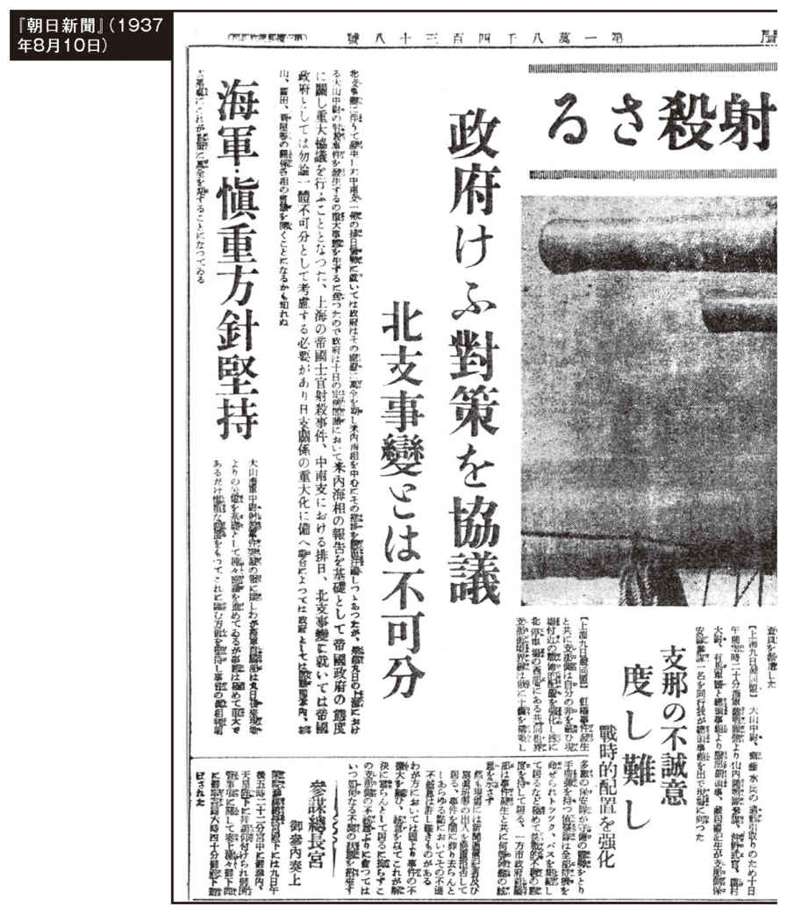
廬溝橋事件は、日本側と中国側に銃弾が打ち込まれたことで「日本側が犯人だ」「中国側が犯人だ」という闇の部分が戦後、論争になっています。それは、一方的に中国側の挑発行為か否かが断定できないところに利益のある、中国や戦勝国側の「日本罪悪史観」に基づく歴史認識なのです。
戦後、我が国の歴史認識は、ＧＨＱ占領下に書き換えられ、日本側の歴史認識が封印されたことで、本当はどうだったのか判らなくなっているのが現状なのです。
そこで日本側が戦争を決断した日を特定することは、我々の歴史を取り戻すうえで大事なことになります。
日支事変は中国側の一方的な挑発が原因だった
戦後日本では「十五年戦争」という言葉がひとり歩きして、現在、教科書にまで記述されています。
一九三一年九月の満州事変から一九四五年八月の敗戦までの約十四年間のことをいうのですが、その意味するところは、このような長い間日本は「無謀な侵略戦争を継続していた」ということであり、東京裁判によって押し付けられた「日本罪悪史観」を象徴する言葉なのです。
日支事変が中国側の一方的な挑発行為となると、戦後の歴史認識はがらっと変わることが、皆様方にも理解していただけることでしょう。
通州大虐殺事件の惨劇が伝えられても、大山中尉が惨殺されても、日本がまだ「不拡大方針」を堅持していたことは、記事を読むと明らかです。
しかし、蒋介石はソ連や英米の支援を受けて一九三七年七月九日、中国各省の高官を前にして「中国は戦うつもりである」と宣言をしていたのです。
この記事で問題なのは、第一次上海事変（一九三二年）のときに取り決めた「上海停戦協定」に違反して、中国側が一方的に上海で戦闘を開始したことなのです。
この中国側の戦闘行為に、日本側が応戦するのは当然であり、中国に引きずられて戦争に突入したのが一九三七年八月十三日だったのです。
日本政府は、この中国側の攻撃によって急遽、同八月十四日に松井石根大将を上海派遣軍司令官に選出し、同八月十七日に「不拡大方針」から転換する閣議決定をしました。
戦後、日支事変は、一九七三年七月七日の「廬溝橋事件」を起点に火ぶたを切ったと一般的にいわれていますが、実際、日本側は廬溝橋事件の後、現地の中国側と和平協定（同七月十一日）を結んでおり、戦闘を拡大する意思がなかったことが明らかになっています。
ところが、中国側の挑発行為はその後も「郎坊事件」（同七月二十五日）、「広安門事件」（同七月二十六日）、「通州事件」（同七月二十九日）と続いていました。この記事を読むと、同八月九日の時点でもまだ我慢していたことがよく分かります。
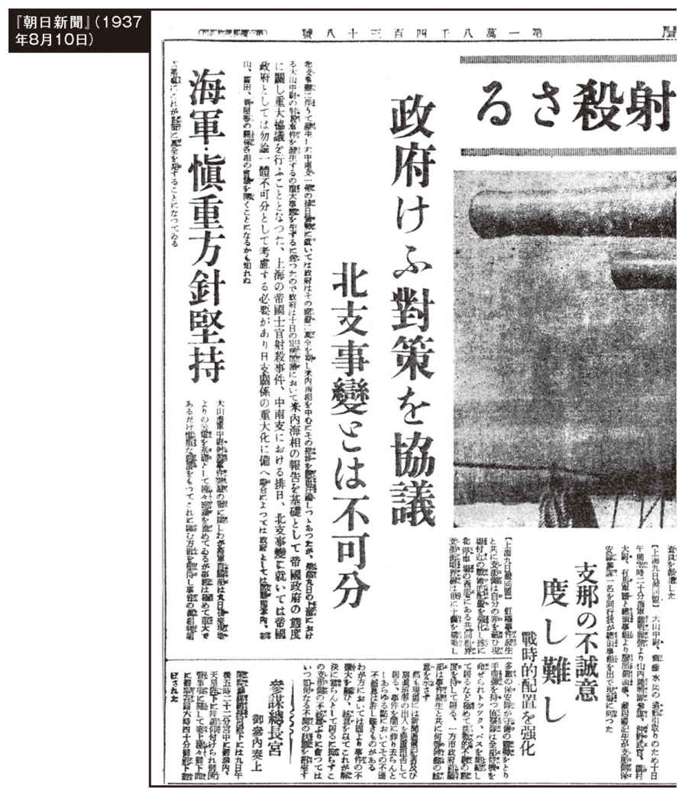
廬溝橋事件は、日本側と中国側に銃弾が打ち込まれたことで「日本側が犯人だ」「中国側が犯人だ」という闇の部分が戦後、論争になっています。それは、一方的に中国側の挑発行為か否かが断定できないところに利益のある、中国や戦勝国側の「日本罪悪史観」に基づく歴史認識なのです。
戦後、我が国の歴史認識は、ＧＨＱ占領下に書き換えられ、日本側の歴史認識が封印されたことで、本当はどうだったのか判らなくなっているのが現状なのです。
そこで日本側が戦争を決断した日を特定することは、我々の歴史を取り戻すうえで大事なことになります。
日支事変は中国側の一方的な挑発が原因だった
戦後日本では「十五年戦争」という言葉がひとり歩きして、現在、教科書にまで記述されています。
一九三一年九月の満州事変から一九四五年八月の敗戦までの約十四年間のことをいうのですが、その意味するところは、このような長い間日本は「無謀な侵略戦争を継続していた」ということであり、東京裁判によって押し付けられた「日本罪悪史観」を象徴する言葉なのです。
日支事変が中国側の一方的な挑発行為となると、戦後の歴史認識はがらっと変わることが、皆様方にも理解していただけることでしょう。
通州大虐殺事件の惨劇が伝えられても、大山中尉が惨殺されても、日本がまだ「不拡大方針」を堅持していたことは、記事を読むと明らかです。
しかし、蒋介石はソ連や英米の支援を受けて一九三七年七月九日、中国各省の高官を前にして「中国は戦うつもりである」と宣言をしていたのです。
この記事で問題なのは、第一次上海事変（一九三二年）のときに取り決めた「上海停戦協定」に違反して、中国側が一方的に上海で戦闘を開始したことなのです。
この中国側の戦闘行為に、日本側が応戦するのは当然であり、中国に引きずられて戦争に突入したのが一九三七年八月十三日だったのです。
日本政府は、この中国側の攻撃によって急遽、同八月十四日に松井石根大将を上海派遣軍司令官に選出し、同八月十七日に「不拡大方針」から転換する閣議決定をしました。
事変以来八十九日目とは！
この記事は、１９３７年11月10日付であり、「事変以来八十九日目」を逆算すると、１９３７年８月13日になっています。
日本人は「日支事変」勃発の歴史認識を同８月13日に戻して検証しなくては、真相がぼやけてしまいます。当然、教科書も書き換えなければいけません。
この記事は、１９３７年11月10日付であり、「事変以来八十九日目」を逆算すると、１９３７年８月13日になっています。
日本人は「日支事変」勃発の歴史認識を同８月13日に戻して検証しなくては、真相がぼやけてしまいます。当然、教科書も書き換えなければいけません。
畑と集落の行き帰りや稲刈り綿摘みも日本軍が保護していた
戦後、「南京大虐殺」を言い募る学者やジャーナリストに、虐殺数の数合わせのために「日本軍は南京までの経路で虐殺を繰り返して進軍した」と公言している人がいます。
そこでこの項では、上海戦での死闘に次ぐ死闘、悪戦また悪戦の連続で死者九一一五名、負傷者三万一二五七名を出した日本軍が、非戦闘員の民間人をどのように処遇していたかを、『朝日新聞』の記事とともに検証することにしました。
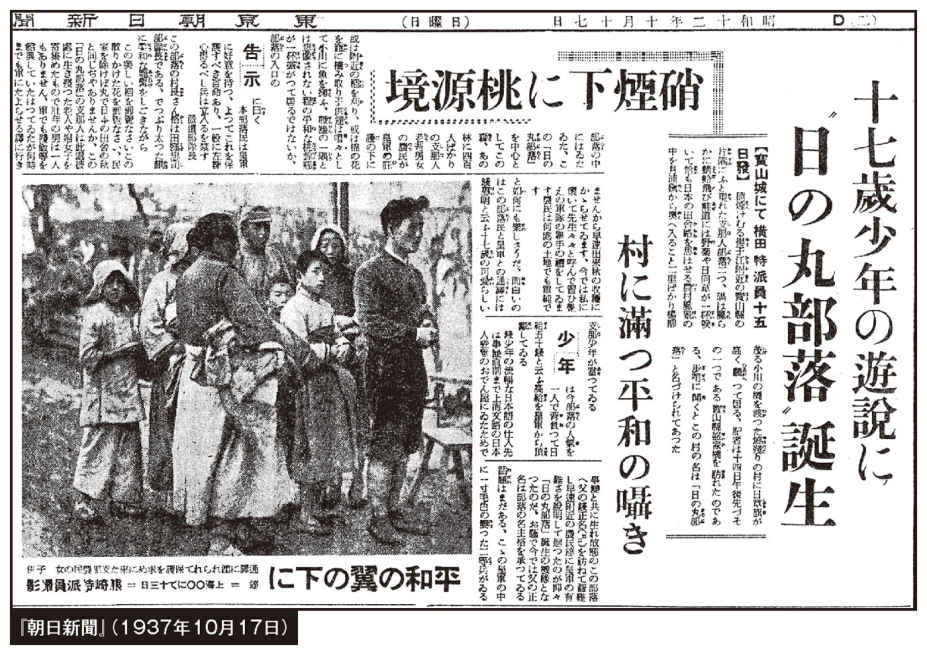 松井大将は、上海附近の戦闘に際し、次の訓令を出していました。
「上海附近の戦闘は専ら我に挑戦する敵軍の※戡定を旨とし、所在の支那官民に対しては努めて之を宣撫愛護するべきこと」（※戡定＝敵を討って乱を鎮めること）
この記事は、江南の交戦地区の畑に秋の稔りを迎えていても、農民が避難して姿がまったく見えないなか、寶山県にふたつの異例の集落があったことを記事にしています。
日本軍と村民の通訳を務めているのは十七歳の少年で、日本人が経営していた上海の「おでん屋」で覚えた流暢な日本語を使って、農民達と日本軍の間を取り持っていたことを報じています。
その少年に、日本軍は「日給五十銭と云う高給」を支払っていたとも記載されています。
記事を直接読んでいただくとよく分かりますが、畑と集落の行き帰りや稲刈り綿摘みなども日本軍が保護していたことがよく分かります。
戦後、「南京大虐殺」を言い募る学者やジャーナリストに、虐殺数の数合わせのために「日本軍は南京までの経路で虐殺を繰り返して進軍した」と公言している人がいます。
そこでこの項では、上海戦での死闘に次ぐ死闘、悪戦また悪戦の連続で死者九一一五名、負傷者三万一二五七名を出した日本軍が、非戦闘員の民間人をどのように処遇していたかを、『朝日新聞』の記事とともに検証することにしました。
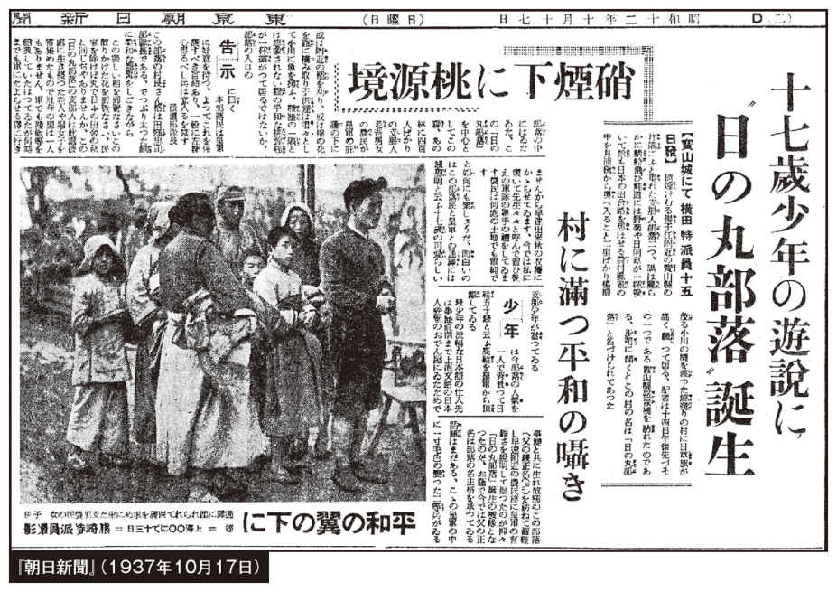 松井大将は、上海附近の戦闘に際し、次の訓令を出していました。
「上海附近の戦闘は専ら我に挑戦する敵軍の※戡定を旨とし、所在の支那官民に対しては努めて之を宣撫愛護するべきこと」（※戡定＝敵を討って乱を鎮めること）
この記事は、江南の交戦地区の畑に秋の稔りを迎えていても、農民が避難して姿がまったく見えないなか、寶山県にふたつの異例の集落があったことを記事にしています。
日本軍と村民の通訳を務めているのは十七歳の少年で、日本人が経営していた上海の「おでん屋」で覚えた流暢な日本語を使って、農民達と日本軍の間を取り持っていたことを報じています。
その少年に、日本軍は「日給五十銭と云う高給」を支払っていたとも記載されています。
記事を直接読んでいただくとよく分かりますが、畑と集落の行き帰りや稲刈り綿摘みなども日本軍が保護していたことがよく分かります。
この記事は、『朝日新聞』だけでなく『アサヒグラフ』（一九三七年十一月十日・第一九号）でも報道されていました。それにもかかわらず、一九七一年八月から十二月まで『朝日新聞』に連載された「中国の旅」の執筆者として一躍有名になった本多勝一氏は、『中国の日本軍』（本多勝一著、一九七二年）の第四部「南京大虐殺」のなかで、次の写真と同じ写真を掲載して「婦女子を狩り集めて連れて行く日本兵たち。強姦や輪姦は七、八歳の幼女から、七十歳を越えた老女にまで及んだ。」と捏造キャプションをつけ、「集団で輪姦された上、皆殺しにされた現場の写真→」と続け、矢印をつけたページを見ると、裸の集団虐殺写真を見開きで大きく掲載しています。
同書は、前年の「中国の旅」の写真版を意識して出版したと思われますが、写真の撮影者や年月日・場所を明らかにしていません。
そして冒頭には、「日中両国人民の真の友好促進のために本書をささげる――著者」、そして最後に「一九七二年七月七日（七・七事変の日）」とあり、「南京大虐殺」があったと叫んでいた者たちは、日支事変の起点を廬溝橋事件に特定したいとの思いがにじみ出ています。
同書が発行された年月日は一九七二年七月二十日で、同九月十日には第五刷りになっていました。
同書が贖罪意識を煽ってから約二カ月後の九月二十九日に日中共同声明が調印され、外交関係が樹立されました。それはまた、日中間で戦後の情報戦がスタートしたことを意味していたのです。
毒ガス使用の実態と敵兵の追悼
戦後の『朝日新聞』では、毒ガスを使用したのは日本軍となっていますが、その実態は真逆だったのです。そして、悪戦苦闘の戦場においても戦死した敵兵への慈悲深い姿を報じていました。
戦後の『朝日新聞』では、毒ガスを使用したのは日本軍となっていますが、その実態は真逆だったのです。そして、悪戦苦闘の戦場においても戦死した敵兵への慈悲深い姿を報じていました。
交戦地区の子供たちも日本兵を怖がっていなかった
日の丸部落の子供たちも、この写真に見る子供たちも、日本兵を怖がっていなかったことは、女児が、はにかみながら手を伸ばして、キャラメルをもらっている姿が微笑ましいですね。
現在も当時も、中国人は、クチコミを信じ軍隊を信用しない伝統があるが、当時、蒋介石が抗日宣伝をしていても、いざ戦争になった後は、日本軍への信頼がクチコミを通して一挙に広がっていたことを物語っている一枚です。
日の丸部落の子供たちも、この写真に見る子供たちも、日本兵を怖がっていなかったことは、女児が、はにかみながら手を伸ばして、キャラメルをもらっている姿が微笑ましいですね。
現在も当時も、中国人は、クチコミを信じ軍隊を信用しない伝統があるが、当時、蒋介石が抗日宣伝をしていても、いざ戦争になった後は、日本軍への信頼がクチコミを通して一挙に広がっていたことを物語っている一枚です。
上海英字紙が日本軍に感謝
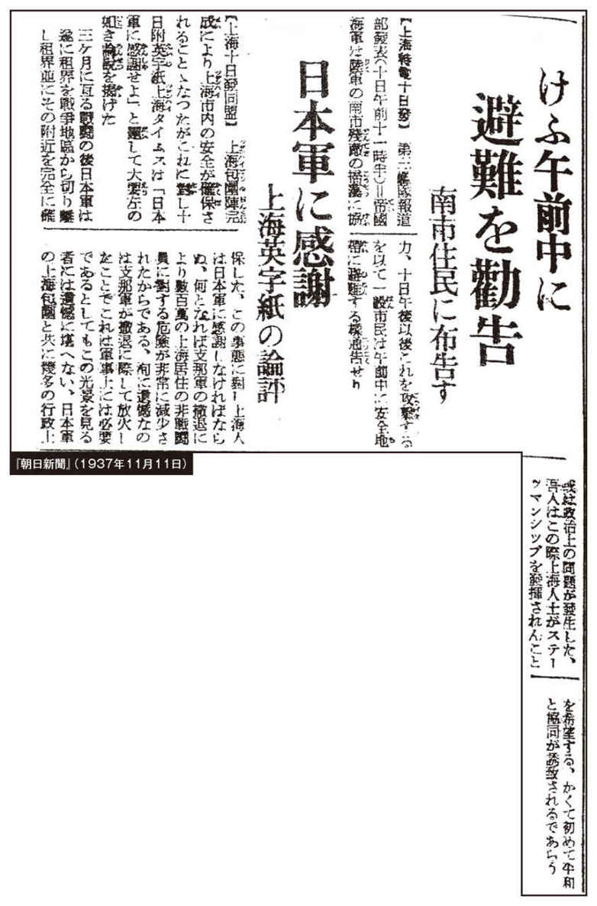
この記事は、前述に掲載した写真の子供たちの姿が、偶然でないことを示しています。
上海戦当時、中国は上海市内を無差別に爆撃する一方、日本軍は、残敵掃討をするので一般市民は安全地帯に避難するよう勧告していました。日支事変の知識を『朝日新聞』や教科書で形成された方々は、目が点になる記事が「英字紙が日本軍に感謝」でしょう。「租界を戦争地区から切り離し租界並びにその附近を完全に確保した。この事態に對し上海人は日本軍に感謝しなければならぬ。何となれば支那軍の撤退により数百萬の上海居住の非戦闘員に對する危険が非常に減少されたからである」と報じています。
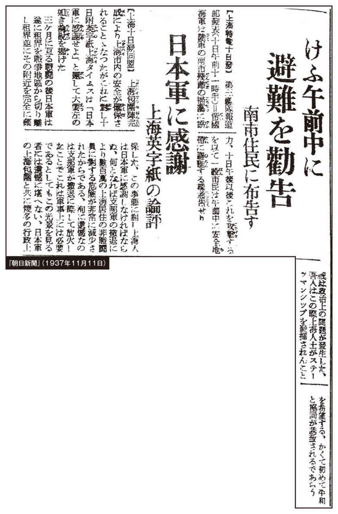
この記事は、前述に掲載した写真の子供たちの姿が、偶然でないことを示しています。
上海戦当時、中国は上海市内を無差別に爆撃する一方、日本軍は、残敵掃討をするので一般市民は安全地帯に避難するよう勧告していました。日支事変の知識を『朝日新聞』や教科書で形成された方々は、目が点になる記事が「英字紙が日本軍に感謝」でしょう。「租界を戦争地区から切り離し租界並びにその附近を完全に確保した。この事態に對し上海人は日本軍に感謝しなければならぬ。何となれば支那軍の撤退により数百萬の上海居住の非戦闘員に對する危険が非常に減少されたからである」と報じています。
日本軍を信頼して続々と戻ってきた避難民
この写真特集は、「日本軍が制圧した地区が安全になった」と安心して続々と舞い戻ってくる避難民を写したものです。
『朝日新聞』は当時、『アサヒグラフ』や『上海戦写真集』などでも様々な写真を掲載していました。
現在、それら南京攻略戦の写真は、一部の写真集と『朝日新聞』の縮刷版でしか確認できないが、実際、朝日新聞社内には戦時中のフィルムを大量に所蔵しているのであり、この四十年間の罪を認めてすべて公開する責任があるのです。
これら上海周辺の記事や写真を見て納得できるのは、天安門事件（一九八九年）後に共産党中国を棄てるように上海地域から留学してきた者から聞いた話と、『朝日新聞』の写真や記事が符合していることです。
当時、筆者は知り合った中国人留学に「日本人は残虐だと教育されたと思っているが、何故日本を選んだのか」との趣旨で質問していました。
その中で印象的だったのは、公務員の娘さんが「祖母は清時代からの上海を知っていて『最悪なのは共産党のいまの時代』と言っていました」とか、工場経営者の息子さんが「母が『上海から蒋介石軍がいなくなって日本軍が来てから夕方、街にいても安全になった』と語っていた」など、様々な話を聞いたことです。中でも一番驚いたのは、おじいさんが蒋介石軍の将軍だったお孫さんが、祖父から「日本軍は軍紀が厳しく、信頼できた」と聞いたことをにこやかに話してくれたことです。実際、ここまでの話をしてもらえるには、家族的な付き合いなしにはできません。
この写真特集は、「日本軍が制圧した地区が安全になった」と安心して続々と舞い戻ってくる避難民を写したものです。
『朝日新聞』は当時、『アサヒグラフ』や『上海戦写真集』などでも様々な写真を掲載していました。
現在、それら南京攻略戦の写真は、一部の写真集と『朝日新聞』の縮刷版でしか確認できないが、実際、朝日新聞社内には戦時中のフィルムを大量に所蔵しているのであり、この四十年間の罪を認めてすべて公開する責任があるのです。
これら上海周辺の記事や写真を見て納得できるのは、天安門事件（一九八九年）後に共産党中国を棄てるように上海地域から留学してきた者から聞いた話と、『朝日新聞』の写真や記事が符合していることです。
当時、筆者は知り合った中国人留学に「日本人は残虐だと教育されたと思っているが、何故日本を選んだのか」との趣旨で質問していました。
その中で印象的だったのは、公務員の娘さんが「祖母は清時代からの上海を知っていて『最悪なのは共産党のいまの時代』と言っていました」とか、工場経営者の息子さんが「母が『上海から蒋介石軍がいなくなって日本軍が来てから夕方、街にいても安全になった』と語っていた」など、様々な話を聞いたことです。中でも一番驚いたのは、おじいさんが蒋介石軍の将軍だったお孫さんが、祖父から「日本軍は軍紀が厳しく、信頼できた」と聞いたことをにこやかに話してくれたことです。実際、ここまでの話をしてもらえるには、家族的な付き合いなしにはできません。
「南京はパニック」と報じていた『ニューヨーク・タイムズ』の記事
１９９６年８月、筆者は「南京大虐殺」を経験したという中国人被害者の証言が聞けるシンポジウムに参加しましたが、その証言は一様に「日本軍が入城してくるまで、平穏無事に生活していた」とのことでした。
しかしこの記事では、南京城陥落の約１カ月前に「......日本軍が今にも空、陸、水の三方から襲撃して来ると戦々兢々、我れ先にと争って（中略）絶望的なパニック状態を展開している」と報じていたのです。
１９９６年８月、筆者は「南京大虐殺」を経験したという中国人被害者の証言が聞けるシンポジウムに参加しましたが、その証言は一様に「日本軍が入城してくるまで、平穏無事に生活していた」とのことでした。
しかしこの記事では、南京城陥落の約１カ月前に「......日本軍が今にも空、陸、水の三方から襲撃して来ると戦々兢々、我れ先にと争って（中略）絶望的なパニック状態を展開している」と報じていたのです。
敵の戦死者を慰霊するのは日本軍の伝統だった
この記事が特別珍しいことでないことは、前述の記事と内容が重複していることで理解していただけることでしょう。
しかし、前掲記事は「○○にて齋藤―河村両特派員」で、今回の記事は「北支戦線にて」となっており、○○の場所は特定できませんが、後述の記事も河村特派員の署名記事ですので、南京攻略戦前の上海戦線の記事と想定できます。
このことは、日露戦争のとき、乃木大将がロシア軍の戦没者将兵の墓をまず建立し、そのあとに日本軍将兵の墓を建立して、三年後に日露両軍の慰霊祭を催行したことに通じています。
日支事変当時、それぞれ司令官が違っていても日本軍に脈々と引き継がれてきた美徳として誇れる記事です。
ちなみに、松井大将は帰国後、南京攻略戦の激戦地の土を取り寄せ、南京城陥落から三年後の一九四〇年、熱海市伊豆山に「興亜観音」を建立し、日中両戦没者将兵の慰霊を東京裁判で起訴されるまで続けていたのです。
この記事が特別珍しいことでないことは、前述の記事と内容が重複していることで理解していただけることでしょう。
しかし、前掲記事は「○○にて齋藤―河村両特派員」で、今回の記事は「北支戦線にて」となっており、○○の場所は特定できませんが、後述の記事も河村特派員の署名記事ですので、南京攻略戦前の上海戦線の記事と想定できます。
このことは、日露戦争のとき、乃木大将がロシア軍の戦没者将兵の墓をまず建立し、そのあとに日本軍将兵の墓を建立して、三年後に日露両軍の慰霊祭を催行したことに通じています。
日支事変当時、それぞれ司令官が違っていても日本軍に脈々と引き継がれてきた美徳として誇れる記事です。
ちなみに、松井大将は帰国後、南京攻略戦の激戦地の土を取り寄せ、南京城陥落から三年後の一九四〇年、熱海市伊豆山に「興亜観音」を建立し、日中両戦没者将兵の慰霊を東京裁判で起訴されるまで続けていたのです。
日本軍を乗せて操船する中国人
この写真のキャプションは「丹陽へ入場する片桐部隊」となっていますが、常州→丹陽→句容の進軍経路は『毎日新聞』の捏造記事が元になり、敗戦後、南京雨花台で処刑された向井・野田両少尉が所属した第十六師団の経路と同じです。
この写真のキャプションは「丹陽へ入場する片桐部隊」となっていますが、常州→丹陽→句容の進軍経路は『毎日新聞』の捏造記事が元になり、敗戦後、南京雨花台で処刑された向井・野田両少尉が所属した第十六師団の経路と同じです。
句容に入る大野部隊
『毎日新聞』「百人斬り競争」の記事を捏造した浅海記者は、四回の連載記事の第三報を十二月五日に句容で執筆したことになっています。
ところが東京裁判の検察官尋問調書では、浅海記者は十二月十日に南京城から見て句容より先、約四〇キロメートルも遠い丹陽にまだいた、と証言していたのです。
この一点だけでも、浅海記者が同記事を捏造したことを証明できるのです。
また、向井・野田両少尉が所属していた富山大隊は、句容を通らず北側を進軍していました。笑い話になりますが、句容からの第三報は、浅海記者も向井・野田両少尉も句容にいなかったにもかかわらず、「全員がいた」こととして報道されたのです。
『毎日新聞』「百人斬り競争」の記事を捏造した浅海記者は、四回の連載記事の第三報を十二月五日に句容で執筆したことになっています。
ところが東京裁判の検察官尋問調書では、浅海記者は十二月十日に南京城から見て句容より先、約四〇キロメートルも遠い丹陽にまだいた、と証言していたのです。
この一点だけでも、浅海記者が同記事を捏造したことを証明できるのです。
また、向井・野田両少尉が所属していた富山大隊は、句容を通らず北側を進軍していました。笑い話になりますが、句容からの第三報は、浅海記者も向井・野田両少尉も句容にいなかったにもかかわらず、「全員がいた」こととして報道されたのです。
蒋介石が部下を置き去りにして南京から遁走
この『朝日新聞』記事は「上海外国人有力筋の情報」となっていますが、後日、この情報が正しかったことが証明されています。
蒋介石は、遁走する前の一九三七年十一月三十日の日記に「抗戦の果てに東南の豊かな地域が敗残兵の掠奪場と化してしまった。戦争前には思いもよらなかった事態だ（中略）撤兵時の掠奪強姦など軍紀逸脱のすさまじさにつき、世の軍事家が予防を考えるよう望むのみだ」（二〇〇七年五月二十五日付『産経新聞』）と記しています。このような蒋介石軍の敗残兵が、南京城内に雪崩れ込んでいたのです。要するに戦後、『朝日新聞』などが報じていた「掠奪強姦」は、蒋介石軍の敗残兵の仕業だったことを、蒋介石自身が日記に書き残していたのです。
この『朝日新聞』記事は「上海外国人有力筋の情報」となっていますが、後日、この情報が正しかったことが証明されています。
蒋介石は、遁走する前の一九三七年十一月三十日の日記に「抗戦の果てに東南の豊かな地域が敗残兵の掠奪場と化してしまった。戦争前には思いもよらなかった事態だ（中略）撤兵時の掠奪強姦など軍紀逸脱のすさまじさにつき、世の軍事家が予防を考えるよう望むのみだ」（二〇〇七年五月二十五日付『産経新聞』）と記しています。このような蒋介石軍の敗残兵が、南京城内に雪崩れ込んでいたのです。要するに戦後、『朝日新聞』などが報じていた「掠奪強姦」は、蒋介石軍の敗残兵の仕業だったことを、蒋介石自身が日記に書き残していたのです。
『ニューヨーク・タイムズ』が報じた支那兵による南京の破壊と放火
前述で蒋介石が自軍の無秩序を嘆いていましたが、『ニューヨーク・タイムズ』のＴ・ダーディン記者が、それらの一部始終を記事にしていました。
その内容は「七日も南京市外十マイルの地域内にある全村落に火を放ち日本軍の進撃に便宜を與へるやうな物はすべて焼払はんとしているため南京市は濛々たる黒煙に包まれてしまった（以下略）」と記し、南京以外でも、戸数二万の鎭江の全市が支那軍に放火されたことを報じています。
前述で蒋介石が自軍の無秩序を嘆いていましたが、『ニューヨーク・タイムズ』のＴ・ダーディン記者が、それらの一部始終を記事にしていました。
その内容は「七日も南京市外十マイルの地域内にある全村落に火を放ち日本軍の進撃に便宜を與へるやうな物はすべて焼払はんとしているため南京市は濛々たる黒煙に包まれてしまった（以下略）」と記し、南京以外でも、戸数二万の鎭江の全市が支那軍に放火されたことを報じています。
支那軍の焦土政策まで報じられていた
ダーディン記者は、翌日も南京城内外の記事を配信していました。
戦後、『朝日新聞』や教科書で教えられていた焦土政策が、すべて支那軍によるものだったことを『ニューヨーク・タイムズ』が報じています。
そして、ここが大事ですので、正確に一部抜粋します。「日本軍の空襲、砲撃の與へた損害は殆んど軍事施設に限られてをり、これを全部合せてもなほ支那軍自身の手によつてなされた破壊の十分の一にも足らぬであらう」。
そして、ダーディン記者はレポートで「蒋将軍はあのような大混乱の起こるのを許すべきではなかった。確かに唐将軍も自分が最後までやり通すことができず、とどのつまりは不首尾に終わった。犠牲の道に踏み出したことは強く非難されるべきである」（『日中戦争史資料』第九巻、二九四ページ）
要するにダーディン記者は、南京の混乱の責任は、支那軍最高司令官の蒋介石将軍と南京防衛司令官の唐生智将軍が遁走したことにある、と批判していたのです。
ダーディン記者は、翌日も南京城内外の記事を配信していました。
戦後、『朝日新聞』や教科書で教えられていた焦土政策が、すべて支那軍によるものだったことを『ニューヨーク・タイムズ』が報じています。
そして、ここが大事ですので、正確に一部抜粋します。「日本軍の空襲、砲撃の與へた損害は殆んど軍事施設に限られてをり、これを全部合せてもなほ支那軍自身の手によつてなされた破壊の十分の一にも足らぬであらう」。
そして、ダーディン記者はレポートで「蒋将軍はあのような大混乱の起こるのを許すべきではなかった。確かに唐将軍も自分が最後までやり通すことができず、とどのつまりは不首尾に終わった。犠牲の道に踏み出したことは強く非難されるべきである」（『日中戦争史資料』第九巻、二九四ページ）
要するにダーディン記者は、南京の混乱の責任は、支那軍最高司令官の蒋介石将軍と南京防衛司令官の唐生智将軍が遁走したことにある、と批判していたのです。
投降勧告を拒否した唐生智南京防衛司令官の責任
蒋介石最高司令官が南京を放棄して遁走したのち、南京の防衛は唐生智将軍に委ねられていました。
日本側は、一九三七年十二月九日、空から「投降勧告文」を投下して、翌十日正午に軍使四名が予定地で待っていたのですが、唐司令官が拒絶したことで南京城を攻撃することになったのです。
歴史的に「投降勧告文」の投下は、降伏を受け入れて無駄な混乱と悲惨な状況を回避する手段として、多くの有能な司令官が選択してきたことです。
勝海舟の江戸城明渡しや、シンガポールのパーシバル中将のように投降を受け入れていたら、現在まで続く南京問題は存在しなかったのです。
勧告文を一読すると、松井大将が中国を愛してやまない気持ちが伝わってきます。松井大将は陸軍大学校を首席で卒業したにもかかわらず、エリートが行く欧米ではなく自ら愛する中国を希望し、北京、上海など中国に十六年間、駐在武官として赴任していました。
ここまで「南京問題」が継続している実態を冷静に見ると、戦争で日本に勝てなかった中国は、自ら国土を破壊し尽くした責任のすべてを日本側になすりつけるため、情報戦の道具として自ら南京の混乱を望んだ戦略だったのでは、と思えるところもあります。
蒋介石最高司令官が南京を放棄して遁走したのち、南京の防衛は唐生智将軍に委ねられていました。
日本側は、一九三七年十二月九日、空から「投降勧告文」を投下して、翌十日正午に軍使四名が予定地で待っていたのですが、唐司令官が拒絶したことで南京城を攻撃することになったのです。
歴史的に「投降勧告文」の投下は、降伏を受け入れて無駄な混乱と悲惨な状況を回避する手段として、多くの有能な司令官が選択してきたことです。
勝海舟の江戸城明渡しや、シンガポールのパーシバル中将のように投降を受け入れていたら、現在まで続く南京問題は存在しなかったのです。
勧告文を一読すると、松井大将が中国を愛してやまない気持ちが伝わってきます。松井大将は陸軍大学校を首席で卒業したにもかかわらず、エリートが行く欧米ではなく自ら愛する中国を希望し、北京、上海など中国に十六年間、駐在武官として赴任していました。
ここまで「南京問題」が継続している実態を冷静に見ると、戦争で日本に勝てなかった中国は、自ら国土を破壊し尽くした責任のすべてを日本側になすりつけるため、情報戦の道具として自ら南京の混乱を望んだ戦略だったのでは、と思えるところもあります。
戦時国際法に違反して「毒ガス」を使用した中国
戦争といえども「国際法」にのっとって闘うのが近代戦のルールです。にもかかわらず、いまだに中国は国際的なルールを無視していることは、皆様もご承知の通りです。

一九八四年十月三十一日、『朝日新聞』は朝刊一面にハガキ二枚分の写真を掲載して「『これが毒ガス作戦』と元将校」との大誤報を記事にしました。これら一連の毒ガス「工作報道」によって、「遺棄化学兵器問題」が外交問題に浮上したのです。
その大誤報写真が、たんなる煙幕だったことを明らかにしたのは『産経新聞』でした。
日本も批准していた一九二五年のジュネーブ議定書で、化学兵器の使用は禁止されましたが、「研究・開発・備蓄」は禁止されていなかったことを承知しているか否か、との筆者の質問に対して、『朝日新聞』広報部は、二〇〇六月六月十九日に「承知しています」と回答してきました。それまで『朝日』が報道していた「毒ガス演習書発見」などの報道は政治宣伝だったことを、自ら認めるかたちになったのです。
戦争といえども「国際法」にのっとって闘うのが近代戦のルールです。にもかかわらず、いまだに中国は国際的なルールを無視していることは、皆様もご承知の通りです。
一九八四年十月三十一日、『朝日新聞』は朝刊一面にハガキ二枚分の写真を掲載して「『これが毒ガス作戦』と元将校」との大誤報を記事にしました。これら一連の毒ガス「工作報道」によって、「遺棄化学兵器問題」が外交問題に浮上したのです。
その大誤報写真が、たんなる煙幕だったことを明らかにしたのは『産経新聞』でした。
日本も批准していた一九二五年のジュネーブ議定書で、化学兵器の使用は禁止されましたが、「研究・開発・備蓄」は禁止されていなかったことを承知しているか否か、との筆者の質問に対して、『朝日新聞』広報部は、二〇〇六月六月十九日に「承知しています」と回答してきました。それまで『朝日』が報道していた「毒ガス演習書発見」などの報道は政治宣伝だったことを、自ら認めるかたちになったのです。
歴史の真実を撮影したカメラマン
この写真を含め、南京城内の写真は『東京日日新聞』のカメラマン、佐藤振寿氏からご存命中に託されものです。
佐藤氏が若くして報道写真の世界に飛び込んだのは、お父上が我が国の草分け的報道カメラマンとして活躍していらっしゃった関係で、自然に就いていたとのことです。
ここに掲載できた佐藤氏の写真は、個人用に携帯していたライカで写したもの、と仰っていました。
この写真を含め、南京城内の写真は『東京日日新聞』のカメラマン、佐藤振寿氏からご存命中に託されものです。
佐藤氏が若くして報道写真の世界に飛び込んだのは、お父上が我が国の草分け的報道カメラマンとして活躍していらっしゃった関係で、自然に就いていたとのことです。
ここに掲載できた佐藤氏の写真は、個人用に携帯していたライカで写したもの、と仰っていました。
水も漏らさぬ報道体制だった
南京攻略戦の取材陣は、陥落前から南京にいて記事を配信していたＡＰ通信、ロイター通信、パラマウント・ニュース、『ニューヨーク・タイムズ』『ロンドン・タイムズ』『シカゴ・デイリー・ニューズ』の各記者もいましたが、南京城内で日本軍が「大虐殺」を行なった、と記事にした者はいません。
現在、中国は南京城内で日本軍が三〇万人を虐殺したと公言していますが、東京の山手線の内側くらいの城内に『朝日新聞』一社だけで八十余名、『毎日新聞』で七十余名もおり、ＮＨＫや『読売新聞』その他、地方紙の記者まで入れるとおびただしい数の取材陣が入城していたことになります。
これら取材陣の数であれば、電信柱一本倒れても気づく監視体制であり、陥落後に民間人が一人でも虐殺されていたら、ニュースになっていたでしょう。
南京攻略戦の取材陣は、陥落前から南京にいて記事を配信していたＡＰ通信、ロイター通信、パラマウント・ニュース、『ニューヨーク・タイムズ』『ロンドン・タイムズ』『シカゴ・デイリー・ニューズ』の各記者もいましたが、南京城内で日本軍が「大虐殺」を行なった、と記事にした者はいません。
現在、中国は南京城内で日本軍が三〇万人を虐殺したと公言していますが、東京の山手線の内側くらいの城内に『朝日新聞』一社だけで八十余名、『毎日新聞』で七十余名もおり、ＮＨＫや『読売新聞』その他、地方紙の記者まで入れるとおびただしい数の取材陣が入城していたことになります。
これら取材陣の数であれば、電信柱一本倒れても気づく監視体制であり、陥落後に民間人が一人でも虐殺されていたら、ニュースになっていたでしょう。
松井大将は中国の文化財を護る厳命を発していた
松井大将は、孫文とも交流していた日本陸軍を代表する親中国派の軍人でした。また蒋介石が日本に留学してきたときには、下宿の保証人にまでなっていました。
松井大将は中国に深い愛着の念をもっていたのであり、中国の文化財の保持は自然なことだったのです。
この写真は、孫文の像が安置されている建物を下から写したものです。これらの中山陵の建物を保持する厳命を発していたことは、東京裁判において、南京日本大使館の参事官だった日高六郎氏が証言しています。
松井大将は、孫文とも交流していた日本陸軍を代表する親中国派の軍人でした。また蒋介石が日本に留学してきたときには、下宿の保証人にまでなっていました。
松井大将は中国に深い愛着の念をもっていたのであり、中国の文化財の保持は自然なことだったのです。
この写真は、孫文の像が安置されている建物を下から写したものです。これらの中山陵の建物を保持する厳命を発していたことは、東京裁判において、南京日本大使館の参事官だった日高六郎氏が証言しています。
中山陵を保持した松井大将の指令
前述した東京裁判での日高参事官の証言は、次の通りです。
「南京市の地図に外国大使館その他外国権益の所在を明瞭にマークしたものを多数作り之を軍隊に配られました。（中略）その地図には更に明孝陵と中山陵とを赤い円で囲み、絶対破壊を避くべき地点であることが記載してありました。
此の二個所の附近では一切大砲を使用することを禁止されたのであります（以下略）」（「速記録」第三〇九号）
この証言を証明しているのが、中山陵を衛兵が守っていた次の写真です。
前述した東京裁判での日高参事官の証言は、次の通りです。
「南京市の地図に外国大使館その他外国権益の所在を明瞭にマークしたものを多数作り之を軍隊に配られました。（中略）その地図には更に明孝陵と中山陵とを赤い円で囲み、絶対破壊を避くべき地点であることが記載してありました。
此の二個所の附近では一切大砲を使用することを禁止されたのであります（以下略）」（「速記録」第三〇九号）
この証言を証明しているのが、中山陵を衛兵が守っていた次の写真です。
南京城陥落
唐生智南京防衛司令官が十二月十二日、部下を置き去りにして遁走した後、南京城内は支那軍の指揮命令系統が完全に崩壊し、地獄絵さながらの状況になって同十三日に陥落したのです。
松井総司令官は、七カ条からなる「南京城攻略要領」を参謀たちに指令していました。
その中の第七条「南京城ノ攻略及入城ニ関スル注意事項」は次の通りです。
（一）「皇軍カ外国ノ首都ニ入城スルハ有史以来ノ盛事ニシテ永く（竹帛）ニ垂ルヘキ事績タルト世界
ノ斉シク注目シアル大事件ナルニ鑑ミ正々堂々将来ノ模範タルヘキ心組ヲ以テ各部隊ノ乱入、友軍ノ相撃、不法行為等絶対ニ無カラシムルヲ要ス」
（五）略奪行為ヲナシ又不注意ト雖モ火ヲ失スルモノハ厳罰ニ処ス 軍隊ト同時ニ多数ノ憲兵、補助憲 兵ヲ入城セシメ不法行為ヲ摘発セシム」（一部抜粋）
唐生智南京防衛司令官が十二月十二日、部下を置き去りにして遁走した後、南京城内は支那軍の指揮命令系統が完全に崩壊し、地獄絵さながらの状況になって同十三日に陥落したのです。
松井総司令官は、七カ条からなる「南京城攻略要領」を参謀たちに指令していました。
その中の第七条「南京城ノ攻略及入城ニ関スル注意事項」は次の通りです。
（一）「皇軍カ外国ノ首都ニ入城スルハ有史以来ノ盛事ニシテ永く（竹帛）ニ垂ルヘキ事績タルト世界
ノ斉シク注目シアル大事件ナルニ鑑ミ正々堂々将来ノ模範タルヘキ心組ヲ以テ各部隊ノ乱入、友軍ノ相撃、不法行為等絶対ニ無カラシムルヲ要ス」
（五）略奪行為ヲナシ又不注意ト雖モ火ヲ失スルモノハ厳罰ニ処ス 軍隊ト同時ニ多数ノ憲兵、補助憲 兵ヲ入城セシメ不法行為ヲ摘発セシム」（一部抜粋）
南京城陥落翌日の城内の模様「寛容慈悲ノ態度ヲ取リ之ヲ宣撫愛護セヨ」
当時の『朝日新聞』に、南京陥落翌日（十二月十四日）角野特派員が撮影した二枚の写真があります。
この写真から伝わってくる日本兵は、律儀で優しい日本人の姿です。防空壕から出てくる女性が、微笑んでいるのが分かります。また次の写真で、布告を几帳面に貼っている姿も日本人らしいですが、直ぐ後ろで上下左右をアドバイスしているように見える兵士も写っていて、のどかな雰囲気が伝わってきます。
松井大将は、参謀たちとは別に、下士官たちに自ら起草した次の訓令を出していました。
「......特ニ敵軍ト雖モ抗戦意志ヲ失ヒタル者及一般官民ニ対シテハ寛容慈悲ノ態度ヲ取リ之ヲ宣撫愛護セヨ」
陥落後の南京は、多数の敗残兵が戦時国際法に反して「便衣」（一般市民と同じ服を着た兵士）に姿を変えた以外は想定された状況で、松井大将の訓令通りに愛護が実行されたことを、これらの写真が物語っています。
敗残兵は「便衣」に姿を変えた瞬間から、捕虜になる資格を失ってしまうのですが、そんなことなどお構いなし、というのが中国の伝統なのです。
陥落直前（十二月十二日、日曜日）、敗残兵が「便衣」に姿を変える一部始終を『ニューヨーク・タイムズ』のダーディン記者が次のように報じています。
「日曜日の正午......中国軍の崩壊が始まった。第八十八師の新兵がまず逃走し、たちまち他の者がそれに続いた。......将校たちは状況に対処することもしなかった。一部隊は銃を捨て、軍服を脱ぎ、便衣を身につけた。記者が十二日の夕方、市内を車で回ったところ、一部隊全員が軍服を脱ぐのを目撃した......多くの兵士は下関へ向かって進む途中で軍服を脱いだ。......中には素っ裸となって一般市民の衣服をはぎとっている兵士もいた」（『日中戦争史資料』第八巻二八二ページ）とか「日曜日の夕方には......軍服とともに武器も遺棄されて、......下関附近で遺棄された軍装品の量はおびただしいものだった」（『日中戦争史資料』第九巻二九〇～二九一ページ）
この記述には、中国軍がゲリラ化した様子がよく描かれています。
一九〇七年に締結された「陸戦法規」では、民間人が戦争の巻き添えにならないため、民兵と義勇軍のうち、次の条件を満たす者だけに交戦資格が認められていました。「◆部下のために責任を負う統率者があること◆遠方から認識することのできる固有の特殊標章を有すること◆公然と兵器を携行していること◆戦争の法規および慣例に従って行動していること」。
国際法の権威、信夫淳平博士は、悪意ある「便衣兵」などを「非交戦者の行為としては、その資格なきに尚かつ敵対行為を敢えてするがごとき、いずれも戦時重罪犯の下に、死刑、もしくは死刑に近き重刑に処せられるのが、戦時公法の認むる一般の慣例である」と述べています。
当時の『朝日新聞』に、南京陥落翌日（十二月十四日）角野特派員が撮影した二枚の写真があります。
この写真から伝わってくる日本兵は、律儀で優しい日本人の姿です。防空壕から出てくる女性が、微笑んでいるのが分かります。また次の写真で、布告を几帳面に貼っている姿も日本人らしいですが、直ぐ後ろで上下左右をアドバイスしているように見える兵士も写っていて、のどかな雰囲気が伝わってきます。
松井大将は、参謀たちとは別に、下士官たちに自ら起草した次の訓令を出していました。
「......特ニ敵軍ト雖モ抗戦意志ヲ失ヒタル者及一般官民ニ対シテハ寛容慈悲ノ態度ヲ取リ之ヲ宣撫愛護セヨ」
陥落後の南京は、多数の敗残兵が戦時国際法に反して「便衣」（一般市民と同じ服を着た兵士）に姿を変えた以外は想定された状況で、松井大将の訓令通りに愛護が実行されたことを、これらの写真が物語っています。
敗残兵は「便衣」に姿を変えた瞬間から、捕虜になる資格を失ってしまうのですが、そんなことなどお構いなし、というのが中国の伝統なのです。
陥落直前（十二月十二日、日曜日）、敗残兵が「便衣」に姿を変える一部始終を『ニューヨーク・タイムズ』のダーディン記者が次のように報じています。
「日曜日の正午......中国軍の崩壊が始まった。第八十八師の新兵がまず逃走し、たちまち他の者がそれに続いた。......将校たちは状況に対処することもしなかった。一部隊は銃を捨て、軍服を脱ぎ、便衣を身につけた。記者が十二日の夕方、市内を車で回ったところ、一部隊全員が軍服を脱ぐのを目撃した......多くの兵士は下関へ向かって進む途中で軍服を脱いだ。......中には素っ裸となって一般市民の衣服をはぎとっている兵士もいた」（『日中戦争史資料』第八巻二八二ページ）とか「日曜日の夕方には......軍服とともに武器も遺棄されて、......下関附近で遺棄された軍装品の量はおびただしいものだった」（『日中戦争史資料』第九巻二九〇～二九一ページ）
この記述には、中国軍がゲリラ化した様子がよく描かれています。
一九〇七年に締結された「陸戦法規」では、民間人が戦争の巻き添えにならないため、民兵と義勇軍のうち、次の条件を満たす者だけに交戦資格が認められていました。「◆部下のために責任を負う統率者があること◆遠方から認識することのできる固有の特殊標章を有すること◆公然と兵器を携行していること◆戦争の法規および慣例に従って行動していること」。
国際法の権威、信夫淳平博士は、悪意ある「便衣兵」などを「非交戦者の行為としては、その資格なきに尚かつ敵対行為を敢えてするがごとき、いずれも戦時重罪犯の下に、死刑、もしくは死刑に近き重刑に処せられるのが、戦時公法の認むる一般の慣例である」と述べています。
十二月十五日の南京城内の風景
陥落から二日目の南京城内は、すでに落ち着いているように見えます。
陥落前後の城内を、米南京大使館エスピー副領事は、本国に次の報告をしています。「......市民の大部分は......いわゆる『安全地帯』に避難しており、......実際に残留せる支那兵の数は不明なれども、数千の者はその軍服を脱ぎ捨て常民の服を着て、常民に混り市内のどこか都合よき処に隠れたるに相違なきなり」。便衣兵を摘発する困難さが伝わってきます。
また、エスピー副領事が東京裁判に提出した陳述書には「支那兵自身、日本軍入城前に掠奪を行いおれることなり。最後の数日間は疑いなく彼らにより人および財産に対する暴行・掠奪が行われたるなり。支那兵が軍服を脱ぎ常民服に着替える大急ぎの処置の中には......着物を剥ぎ取るための殺人をも行いしなるべし。また......常民も計画ならざる掠奪をなせしこと明らかなり」とあります（東京裁判速記録二一〇号）。
次の写真で、カメラを避けて立ち去ろうとしている若者は、怪しく見えます。また、古着を並べて商売をしている者の身なりを見ると、彼らの自宅から持ち出した古着には見えません。
陥落から二日目の南京城内は、すでに落ち着いているように見えます。
陥落前後の城内を、米南京大使館エスピー副領事は、本国に次の報告をしています。「......市民の大部分は......いわゆる『安全地帯』に避難しており、......実際に残留せる支那兵の数は不明なれども、数千の者はその軍服を脱ぎ捨て常民の服を着て、常民に混り市内のどこか都合よき処に隠れたるに相違なきなり」。便衣兵を摘発する困難さが伝わってきます。
また、エスピー副領事が東京裁判に提出した陳述書には「支那兵自身、日本軍入城前に掠奪を行いおれることなり。最後の数日間は疑いなく彼らにより人および財産に対する暴行・掠奪が行われたるなり。支那兵が軍服を脱ぎ常民服に着替える大急ぎの処置の中には......着物を剥ぎ取るための殺人をも行いしなるべし。また......常民も計画ならざる掠奪をなせしこと明らかなり」とあります（東京裁判速記録二一〇号）。
次の写真で、カメラを避けて立ち去ろうとしている若者は、怪しく見えます。また、古着を並べて商売をしている者の身なりを見ると、彼らの自宅から持ち出した古着には見えません。
十二月十五日、南京安全区附近の情景
東京裁判の判決では「南京が占領された後、最初の二、三日の間に少なくとも一万二○○○人の非戦闘員である中国人男女子供が無差別に殺害され、占領一カ月のあいだに約二万の強姦事件が市内に発生した。......」（朝日新聞法廷記者団著『東京裁判』〈下〉）
この判決通り「無差別に殺害」が行われたのであれば、前述の写真に写っている市民は、皆殺しに遭ったことになります。
しかし実際には、陥落から二日目に道端で野菜を売っていたり、水餃子を食べさせる露天ができていたり、東京裁判の判決は荒唐無稽な「作り話」を文書にしたことがよくわかります。
次の写真の日本兵を見ている子供の笑顔と、銃を見つめている子供の厳しい顔が印象的です。そこには「銃は怖いが、日本兵は怖くない」という子供の心情が写っています。また、水餃子をつくっている女性は、日本兵に対して無関心に仕事をしている姿から、日本兵に対する恐怖心などまったく感じられません。
これら南京城内を写した佐藤氏の写真が戦後、一挙に公開されたのは本書が初めてです。南京市民の微妙な表情まで写し出されており、細部までじっくり見ていただければ、「南京陥落後の数日間は血の海になっていた」などの疑惑の念は雲散霧消することでしょう。
東京裁判の判決では「南京が占領された後、最初の二、三日の間に少なくとも一万二○○○人の非戦闘員である中国人男女子供が無差別に殺害され、占領一カ月のあいだに約二万の強姦事件が市内に発生した。......」（朝日新聞法廷記者団著『東京裁判』〈下〉）
この判決通り「無差別に殺害」が行われたのであれば、前述の写真に写っている市民は、皆殺しに遭ったことになります。
しかし実際には、陥落から二日目に道端で野菜を売っていたり、水餃子を食べさせる露天ができていたり、東京裁判の判決は荒唐無稽な「作り話」を文書にしたことがよくわかります。
次の写真の日本兵を見ている子供の笑顔と、銃を見つめている子供の厳しい顔が印象的です。そこには「銃は怖いが、日本兵は怖くない」という子供の心情が写っています。また、水餃子をつくっている女性は、日本兵に対して無関心に仕事をしている姿から、日本兵に対する恐怖心などまったく感じられません。
これら南京城内を写した佐藤氏の写真が戦後、一挙に公開されたのは本書が初めてです。南京市民の微妙な表情まで写し出されており、細部までじっくり見ていただければ、「南京陥落後の数日間は血の海になっていた」などの疑惑の念は雲散霧消することでしょう。
十二月十五日の南京安全区内の情景
南京城内に設けられていた安全区には、松井大将の厳命により一発の砲弾も打ち込まれることがなく、日本軍に対する南京市民の信頼感は陥落前から厚かったのです。
それを物語る証言を、前出のエスピー副領事がしていました。「......市役所の完全なる逼塞と支那人と大部分の支那住民の退去により市に発生したる完全なる混乱と無秩序とは、市をいかなる不法行為をも行い得らるる場所となし終れるなり。これがため残留せる住民には、日本人が来たれば待望の秩序と統制との恢復あるべしとの意味にて、日本人を歓迎する気分さえもありたることは想像せらるるところなり」（東京裁判速記録二一〇号）
これらの状況を踏まえて次の写真を見ると、老若男女の皆さんすべてが微笑んでいます。帽子をかぶっている老人が、手を組んで目を細めている姿に、日本人への信頼感がにじみ出ています。
筆者が、佐藤氏の写真の中でとくに好きなのは次の一枚です。南京陥落からまだ二日目にもかかわらず、子どもたちの背中からは平和な日常が感じられ、戸口にからだを半分恥ずかしそうに隠しつつも、イケメンの佐藤氏に微笑んでいる若いお母さんの姿に、すがすがしい空気を感じます。
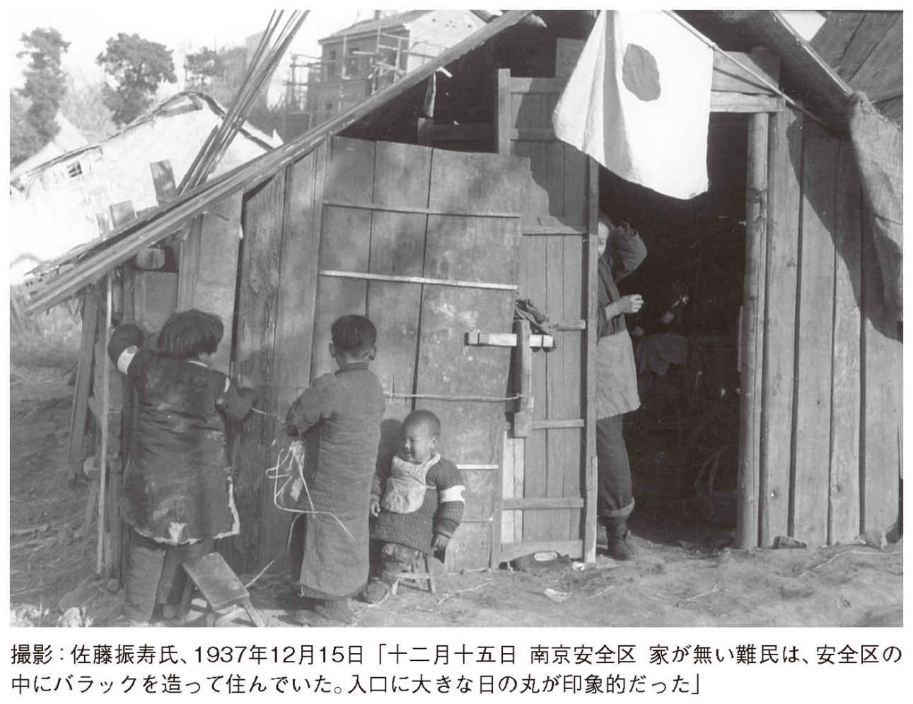
南京城内に設けられていた安全区には、松井大将の厳命により一発の砲弾も打ち込まれることがなく、日本軍に対する南京市民の信頼感は陥落前から厚かったのです。
それを物語る証言を、前出のエスピー副領事がしていました。「......市役所の完全なる逼塞と支那人と大部分の支那住民の退去により市に発生したる完全なる混乱と無秩序とは、市をいかなる不法行為をも行い得らるる場所となし終れるなり。これがため残留せる住民には、日本人が来たれば待望の秩序と統制との恢復あるべしとの意味にて、日本人を歓迎する気分さえもありたることは想像せらるるところなり」（東京裁判速記録二一〇号）
これらの状況を踏まえて次の写真を見ると、老若男女の皆さんすべてが微笑んでいます。帽子をかぶっている老人が、手を組んで目を細めている姿に、日本人への信頼感がにじみ出ています。
筆者が、佐藤氏の写真の中でとくに好きなのは次の一枚です。南京陥落からまだ二日目にもかかわらず、子どもたちの背中からは平和な日常が感じられ、戸口にからだを半分恥ずかしそうに隠しつつも、イケメンの佐藤氏に微笑んでいる若いお母さんの姿に、すがすがしい空気を感じます。
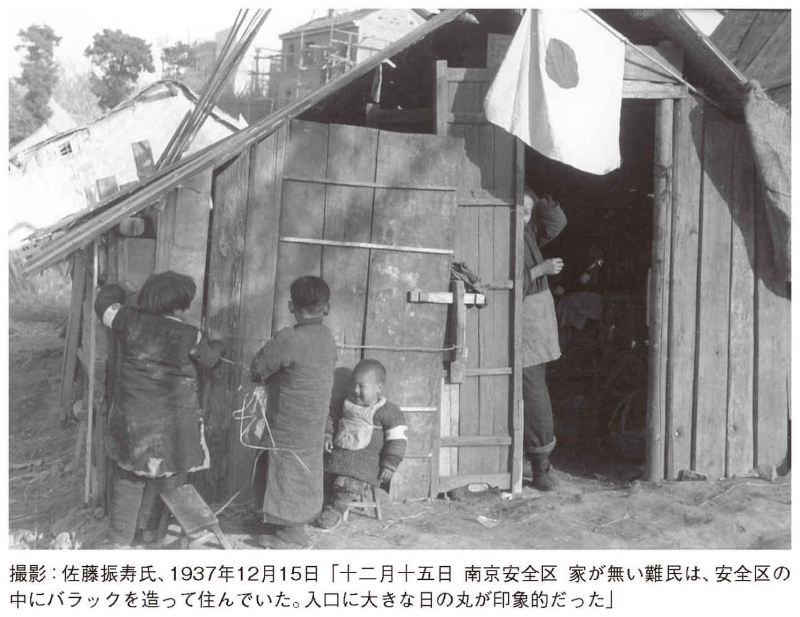
十二月十五日の南京安全区の情景
これほど長閑な写真を佐藤氏が所有していても、二〇〇三年四月二十八日、南京攻略戦当時に「百人斬り競争」記事を掲載した『毎日新聞』と、一九七一年にその記事を焼き直しして掲載した『朝日新聞』が、南京で処刑された向井・野田両少尉の遺族に「訂正と謝罪」を求められ、提訴されてから、戦後初めて『毎日新聞』の後輩が取材にきたと佐藤氏が仰ってました。
我が国には、たしかに「報道する自由」がありますが、マスメディアは「報道しない自由」を基本にしています。これは、歴史認識問題に特定したことではありません。
それゆえ我が国は「報道の自由度」国際ランキングで、不名誉な64位になっているのです。
これらの写真を撮った一九三七年十二月十五日は、中国によると「南京大虐殺」のクライマックスになっていた時期です。
にもかかわらず、写真に映っている中国人の安心しきった情景を、どう説明するのでしょう。
現在の閉塞感の根元には、歴史認識が重くのしかかっています。その一例として、今年度（二〇一二年）の検定をパスした高校教科書をご覧ください。
「日本軍は南京の占領に際し、多数の中国人を殺害し、略奪・放火・暴行をおこなった」（第一学習社『日本史Ａ』）
「日本軍は南京市外で捕虜・投降兵をはじめ女性や子どもを含む中国人約20万人を殺害し、略奪・放火や女性への暴行をおこなった」（実教出版『日本史Ａ』）
右記の記述と写真を比較してご覧ください。血なまぐさい「大虐殺」の最中に、彼らは食事をしていることになります。
南京問題は、常識的に考えればわかります。それは地球の災害史に記録されるような東日本大震災の死亡者が、約２万人だったことでも説明されるでしょう。
これほど長閑な写真を佐藤氏が所有していても、二〇〇三年四月二十八日、南京攻略戦当時に「百人斬り競争」記事を掲載した『毎日新聞』と、一九七一年にその記事を焼き直しして掲載した『朝日新聞』が、南京で処刑された向井・野田両少尉の遺族に「訂正と謝罪」を求められ、提訴されてから、戦後初めて『毎日新聞』の後輩が取材にきたと佐藤氏が仰ってました。
我が国には、たしかに「報道する自由」がありますが、マスメディアは「報道しない自由」を基本にしています。これは、歴史認識問題に特定したことではありません。
それゆえ我が国は「報道の自由度」国際ランキングで、不名誉な64位になっているのです。
これらの写真を撮った一九三七年十二月十五日は、中国によると「南京大虐殺」のクライマックスになっていた時期です。
にもかかわらず、写真に映っている中国人の安心しきった情景を、どう説明するのでしょう。
現在の閉塞感の根元には、歴史認識が重くのしかかっています。その一例として、今年度（二〇一二年）の検定をパスした高校教科書をご覧ください。
「日本軍は南京の占領に際し、多数の中国人を殺害し、略奪・放火・暴行をおこなった」（第一学習社『日本史Ａ』）
「日本軍は南京市外で捕虜・投降兵をはじめ女性や子どもを含む中国人約20万人を殺害し、略奪・放火や女性への暴行をおこなった」（実教出版『日本史Ａ』）
右記の記述と写真を比較してご覧ください。血なまぐさい「大虐殺」の最中に、彼らは食事をしていることになります。
南京問題は、常識的に考えればわかります。それは地球の災害史に記録されるような東日本大震災の死亡者が、約２万人だったことでも説明されるでしょう。
十二月十七日、南京入城式
厳粛な入城式の先頭が、松井石根総司令官です。
松井大将は東京裁判の判決によって絞首刑にされました。
松井大将の判決文に「この六、七週の期間において、何千人という婦人が強姦され、十万人以上の人が殺害された......」（前掲『東京裁判』〈下〉）とあり、「この六、七週......」とは陥落後からで、当然「大虐殺」の最中の入城式ということになります。
この写真を観るといつも想うことがあります。それは、松井大将が入城式に向かっていた途中、焼け跡から「赤子」の泣き声が聴こえると、松井大将は、岡田尚秘書に「捜してこい」と命じ、救助してきた女の赤子を大将自ら、温泉にいれ毛布にくるみ、ミルクを飲ませて育て、松子と命名して可愛いがり、この入城式には、岡田秘書が赤子を背負って入城していたのです。（『興亜観音』創刊号）
厳粛な入城式の先頭が、松井石根総司令官です。
松井大将は東京裁判の判決によって絞首刑にされました。
松井大将の判決文に「この六、七週の期間において、何千人という婦人が強姦され、十万人以上の人が殺害された......」（前掲『東京裁判』〈下〉）とあり、「この六、七週......」とは陥落後からで、当然「大虐殺」の最中の入城式ということになります。
この写真を観るといつも想うことがあります。それは、松井大将が入城式に向かっていた途中、焼け跡から「赤子」の泣き声が聴こえると、松井大将は、岡田尚秘書に「捜してこい」と命じ、救助してきた女の赤子を大将自ら、温泉にいれ毛布にくるみ、ミルクを飲ませて育て、松子と命名して可愛いがり、この入城式には、岡田秘書が赤子を背負って入城していたのです。（『興亜観音』創刊号）
南京入城式後の安全区の情景
入城式が終わって、安全区では、避難民に菓子が振る舞われていたようです。陥落から四日目になり、南京安全区国際委員会のメンバーから、日本大使館や欧米の大使館に、南京城内の人口調査表が届けられていました。その内容は、「資料 Ｔ６号―１９３７・12・17＝二〇万人」だったのです。その後の同調査表は「資料 Ｔ１４号―１９３７・12・27＝二〇万人」、「資料 Ｔ２２号―１９３８・１・17＝二五万人」。この数字だけで、「南京大虐殺」など消滅しています。
なぜなら東京裁判の判決文が、南京城内で六週間に亘って「虐殺・強姦・暴行・掠奪」が行われたとなっていたにもかかわらず、人口が一カ月で五万人も増えているからです。
日本軍の入城で、治安が回復したことを知った避難民が舞い戻ってきたことを示しているのです。
入城式が終わって、安全区では、避難民に菓子が振る舞われていたようです。陥落から四日目になり、南京安全区国際委員会のメンバーから、日本大使館や欧米の大使館に、南京城内の人口調査表が届けられていました。その内容は、「資料 Ｔ６号―１９３７・12・17＝二〇万人」だったのです。その後の同調査表は「資料 Ｔ１４号―１９３７・12・27＝二〇万人」、「資料 Ｔ２２号―１９３８・１・17＝二五万人」。この数字だけで、「南京大虐殺」など消滅しています。
なぜなら東京裁判の判決文が、南京城内で六週間に亘って「虐殺・強姦・暴行・掠奪」が行われたとなっていたにもかかわらず、人口が一カ月で五万人も増えているからです。
日本軍の入城で、治安が回復したことを知った避難民が舞い戻ってきたことを示しているのです。
東京裁判の南京判決は二通りある
先に、東京裁判での松井大将に対する個人判決の南京虐殺数は「十万人以上」だったことを明らかにしました。ところが、総括判決では「後日の見積りによれば、日本軍が占領してから最初の六週間に、南京とその周辺で殺害された一般人と捕虜の総数は、二十万人以上であったことが示されている」（前掲『東京裁判』〈下〉）となっているのです。
これが東京裁判の真髄と思えば、すべて納得できるのです。不遡及に反して「平和に対する罪」で裁いたり、検察側証人・調書は検証なしで伝聞・噂話・創作でも偽証罪が一切問われない裁判だったのです。
朝日新聞社刊『東京裁判』の最後のところで、「懲罰作業は終わった」と裁判を揶揄していました。
先に、東京裁判での松井大将に対する個人判決の南京虐殺数は「十万人以上」だったことを明らかにしました。ところが、総括判決では「後日の見積りによれば、日本軍が占領してから最初の六週間に、南京とその周辺で殺害された一般人と捕虜の総数は、二十万人以上であったことが示されている」（前掲『東京裁判』〈下〉）となっているのです。
これが東京裁判の真髄と思えば、すべて納得できるのです。不遡及に反して「平和に対する罪」で裁いたり、検察側証人・調書は検証なしで伝聞・噂話・創作でも偽証罪が一切問われない裁判だったのです。
朝日新聞社刊『東京裁判』の最後のところで、「懲罰作業は終わった」と裁判を揶揄していました。
きのふの敵に温情
「治療を受けている支那負傷兵」とあるのは、「南京は十一月下旬より東南前線の戦死傷者の収容所となり、移転せる政府機関、個人の私邸まで強制的に病室に充てられ、全市医薬の香が瀰漫したる状態なり。これにより生ぜし死者もまた少なからず......」（中津三夫大佐の東京裁判での陳述）
日本軍は、南京城内で虐殺ではなく、蒋介石軍が置き去りにした傷病兵を看病していたのです。
こと南京問題に関しては、ほとんどの歴史が真逆になっていますので、一次史料を直接読む必要があります。
「治療を受けている支那負傷兵」とあるのは、「南京は十一月下旬より東南前線の戦死傷者の収容所となり、移転せる政府機関、個人の私邸まで強制的に病室に充てられ、全市医薬の香が瀰漫したる状態なり。これにより生ぜし死者もまた少なからず......」（中津三夫大佐の東京裁判での陳述）
日本軍は、南京城内で虐殺ではなく、蒋介石軍が置き去りにした傷病兵を看病していたのです。
こと南京問題に関しては、ほとんどの歴史が真逆になっていますので、一次史料を直接読む必要があります。
南京は微笑む
南京陥落から十日目の城内の光景です。
写真を見ての通りですが、子供たちはすっかり安心しきって笑顔がこぼれています。
写真 は、東京裁判で検事側証人として、日本軍の暴虐事件が何百件もあったと証言したマギー牧師がいた教会だったのです。
は、東京裁判で検事側証人として、日本軍の暴虐事件が何百件もあったと証言したマギー牧師がいた教会だったのです。
しかし弁護側の反対尋問では、実際に目撃した事件は殺害一件、強姦一件だけで、その殺害も逃げ出した敗残兵を撃ったとのことで、戦時国際法ではまったく問題がなかったのです。
南京陥落から十日目の城内の光景です。
写真を見ての通りですが、子供たちはすっかり安心しきって笑顔がこぼれています。
写真
は、東京裁判で検事側証人として、日本軍の暴虐事件が何百件もあったと証言したマギー牧師がいた教会だったのです。しかし弁護側の反対尋問では、実際に目撃した事件は殺害一件、強姦一件だけで、その殺害も逃げ出した敗残兵を撃ったとのことで、戦時国際法ではまったく問題がなかったのです。
十二月二十日、南京に日本から届けられた「こも樽」
この写真では、捕虜として投降した者が働いているように、南京陥落から七日目にはすっかり落ち着きを取り戻し、日本から正月用の「こも樽」が届けられていました。
「こも樽」をよく見ると、各部隊の地元から贈られてきたようです。
佐藤氏はこの新酒を味わうことなく、二十四日に南京を後にし、上海に向かったとのことです。
この写真では、捕虜として投降した者が働いているように、南京陥落から七日目にはすっかり落ち着きを取り戻し、日本から正月用の「こも樽」が届けられていました。
「こも樽」をよく見ると、各部隊の地元から贈られてきたようです。
佐藤氏はこの新酒を味わうことなく、二十四日に南京を後にし、上海に向かったとのことです。
陥落後の南京は急速に治安が回復していた
南京の安全区は、前述の上海の南市とはまったく違い、中立性が認められないことから、南京の安全区を発案した牧師たちの申し入れを、日本側は正式には認めませんでした。
敗残兵の侵入を拒絶できる強制力がないことと、これから戦いが本格化する敵と同じ南京城内では、市街地と安全区がハッキリ区別できないことや、発起人の牧師たちが「親中反日」で、中立性を保持できないことが歴然としていたからです。
それでも中国に優しい松井大将は、安全区として正式には認めませんでしたが、申し入れの意思を尊重して、一発の砲弾も打ち込まなかったのです。
南京陥落後は、彼らを手厚く保護していましたが、陥落前、常民服に変装した数千人の「便衣兵」が安全区に侵入したことで、様々な問題が起こっていました。
南京陥落のときには、南京に残留した婦女子など非戦闘員は、すべて国際委員会が管理する安全区内に避難していました。したがって、東京裁判などでいわれる「数千人の強姦」ということが仮に事実としてあったのであれば、日本軍が入城するまでの無政府状態の中、蒋介石軍の敗残兵による仕業と判断して差し支えないのです。
国際委員会のラーベ委員長は、日本軍に次のような感謝状を出していました。「拝啓 私どもは貴下の砲兵隊が安全地区を攻撃されなかったという美学に対して、また同地区における中国民間人の援護にたいする将来の計画につき、貴下と連絡をとり得るようになりましたことに対して感謝の意を表するものであります」（東京裁判速記録二一〇号）
次に金陵大学マッカラム医師の日記・手記には「◆（日本軍）礼儀正しく、しかも尊敬して私どもを処遇してくれました。......◆十二月三十一日、今日私は民衆の群......を目撃しました。あとで彼らは、......日本軍の手によって配分された米を携帯して帰って来ました。今日は若干幸福な人々がおりました。◆（一月三日）最近七、八名の大変に立派な日本兵が病院を訪問しました。......彼らに病人に与える食物の欠乏を語りました。今日彼らは若干の牛肉を見つけて、一○○斤の豆をもってきました。我々は一箇月も病院で肉なんか食べてなかったので、これらの贈物は大いに歓迎されました」（東京裁判速記録二一〇号）
南京の安全区は、前述の上海の南市とはまったく違い、中立性が認められないことから、南京の安全区を発案した牧師たちの申し入れを、日本側は正式には認めませんでした。
敗残兵の侵入を拒絶できる強制力がないことと、これから戦いが本格化する敵と同じ南京城内では、市街地と安全区がハッキリ区別できないことや、発起人の牧師たちが「親中反日」で、中立性を保持できないことが歴然としていたからです。
それでも中国に優しい松井大将は、安全区として正式には認めませんでしたが、申し入れの意思を尊重して、一発の砲弾も打ち込まなかったのです。
南京陥落後は、彼らを手厚く保護していましたが、陥落前、常民服に変装した数千人の「便衣兵」が安全区に侵入したことで、様々な問題が起こっていました。
南京陥落のときには、南京に残留した婦女子など非戦闘員は、すべて国際委員会が管理する安全区内に避難していました。したがって、東京裁判などでいわれる「数千人の強姦」ということが仮に事実としてあったのであれば、日本軍が入城するまでの無政府状態の中、蒋介石軍の敗残兵による仕業と判断して差し支えないのです。
国際委員会のラーベ委員長は、日本軍に次のような感謝状を出していました。「拝啓 私どもは貴下の砲兵隊が安全地区を攻撃されなかったという美学に対して、また同地区における中国民間人の援護にたいする将来の計画につき、貴下と連絡をとり得るようになりましたことに対して感謝の意を表するものであります」（東京裁判速記録二一〇号）
次に金陵大学マッカラム医師の日記・手記には「◆（日本軍）礼儀正しく、しかも尊敬して私どもを処遇してくれました。......◆十二月三十一日、今日私は民衆の群......を目撃しました。あとで彼らは、......日本軍の手によって配分された米を携帯して帰って来ました。今日は若干幸福な人々がおりました。◆（一月三日）最近七、八名の大変に立派な日本兵が病院を訪問しました。......彼らに病人に与える食物の欠乏を語りました。今日彼らは若干の牛肉を見つけて、一○○斤の豆をもってきました。我々は一箇月も病院で肉なんか食べてなかったので、これらの贈物は大いに歓迎されました」（東京裁判速記録二一〇号）
手を握り合って越年――日本から失われつつある情景
一連の日本兵と中国人婦女子との交歓の写真を見ると、『朝日新聞』や文科省、そして中国が言い募る「中国人の男女子供を無差別に殺し回っていた」日本兵のほうが、かえって現在の日本人より中国人から信頼感を寄せられていたように感じるのは、どうしてなのでしょうか。
現在、我が国では悲惨な通り魔事件が繰り返されていますが、明らかに日本人は変質しています。
小中高で繰り返し「南京で婦女子を無差別に殺戮した」とか「慰安婦を強制連行した」と教育されていれば、「日本人＝残虐民族」というふうに完全に洗脳され、無意識の行動を呼び起こしているようにさえ思えてなりません。
小学生も、中学受験のために「南京大虐殺」を参考書で勉強しています。これは、政治家やマスメディアの責任を糺す程度では解決できないところまで来ています。
社会に影響力のある作家・渡辺淳一氏は、週刊誌の連載「あとの祭り」〈南京虐殺に思う〉（二〇一二年三月十五日号）の中で、「当時の南京市内の様子を想像すると、身の毛もよだつ」とか「わたしは、少なからずあったろうと思う」と書いています。
そして「穏やかで良識あふれるように見える日本人のなかにも、悪魔にならないともかぎらない血が秘められている」そうで、だから「南京大虐殺の記念館は、そのための教訓だと思えば、とくに騒ぎ立てることもないと思うのだが」と締めています。
渡辺氏の歴史認識に興味はないのですが、精神医学に通じるような「日本人→悪魔→血」の連鎖を認識させるための教訓は逆に、日本人にこれまで薄かった残虐性を植えつける「血→悪魔→日本人→通り魔殺人」へと進む「負の連鎖」が生じており、「教科書」がその触媒になっているように思えてなりません。
一連の日本兵と中国人婦女子との交歓の写真を見ると、『朝日新聞』や文科省、そして中国が言い募る「中国人の男女子供を無差別に殺し回っていた」日本兵のほうが、かえって現在の日本人より中国人から信頼感を寄せられていたように感じるのは、どうしてなのでしょうか。
現在、我が国では悲惨な通り魔事件が繰り返されていますが、明らかに日本人は変質しています。
小中高で繰り返し「南京で婦女子を無差別に殺戮した」とか「慰安婦を強制連行した」と教育されていれば、「日本人＝残虐民族」というふうに完全に洗脳され、無意識の行動を呼び起こしているようにさえ思えてなりません。
小学生も、中学受験のために「南京大虐殺」を参考書で勉強しています。これは、政治家やマスメディアの責任を糺す程度では解決できないところまで来ています。
社会に影響力のある作家・渡辺淳一氏は、週刊誌の連載「あとの祭り」〈南京虐殺に思う〉（二〇一二年三月十五日号）の中で、「当時の南京市内の様子を想像すると、身の毛もよだつ」とか「わたしは、少なからずあったろうと思う」と書いています。
そして「穏やかで良識あふれるように見える日本人のなかにも、悪魔にならないともかぎらない血が秘められている」そうで、だから「南京大虐殺の記念館は、そのための教訓だと思えば、とくに騒ぎ立てることもないと思うのだが」と締めています。
渡辺氏の歴史認識に興味はないのですが、精神医学に通じるような「日本人→悪魔→血」の連鎖を認識させるための教訓は逆に、日本人にこれまで薄かった残虐性を植えつける「血→悪魔→日本人→通り魔殺人」へと進む「負の連鎖」が生じており、「教科書」がその触媒になっているように思えてなりません。
南京に自治委員会が誕生
日本軍の厳粛な治安維持に賛同するかたちで、中国人良民が自発的に十二月二十三日に治安維持会を設立し、日本軍と協力して自治準備委員会が設立されました。同二十四日から翌年一月五日まで、中国人も立ち会って「良民証」交付のための市民査問調査が行われました。
この間、十二月二十五日深夜、日本軍将校宿舎が敗残兵の集団に襲われ、将校一二名が殺傷される事件が勃発し、犯人は下関埠頭で処刑されました。
このとき発行された「良民証」は、老人と子供を除いて約一六万票、摘出された便衣兵の「約二〇〇〇人」だった。この約二〇〇〇人は捕虜として扱われ、旧外交部に収容されました。その過程で陶錫山が正式に委員長に推され、南京市自治委員会の誕生を宣言したときの写真です。発足大会は一月三日、中国人良民三〇〇〇人が集まって挙行されました。
日本軍の厳粛な治安維持に賛同するかたちで、中国人良民が自発的に十二月二十三日に治安維持会を設立し、日本軍と協力して自治準備委員会が設立されました。同二十四日から翌年一月五日まで、中国人も立ち会って「良民証」交付のための市民査問調査が行われました。
この間、十二月二十五日深夜、日本軍将校宿舎が敗残兵の集団に襲われ、将校一二名が殺傷される事件が勃発し、犯人は下関埠頭で処刑されました。
このとき発行された「良民証」は、老人と子供を除いて約一六万票、摘出された便衣兵の「約二〇〇〇人」だった。この約二〇〇〇人は捕虜として扱われ、旧外交部に収容されました。その過程で陶錫山が正式に委員長に推され、南京市自治委員会の誕生を宣言したときの写真です。発足大会は一月三日、中国人良民三〇〇〇人が集まって挙行されました。
陳漢森より土井中佐への感謝状
感謝状に年月日が記載されていないのは、陳漢森紅卍会分会長が直接、一九三八年一月二日に土井比良艦長のもとまで届けたからです（詳細は『「南京事件」日本人48人の証言』阿羅健一著・小学館文庫を参照ください）。
（翻訳） 陳 漢森よりの書簡
東アジアにおいて、戦火を交える時より、戦争の風雲が大陸に覆われており、軍艦が揚子江を遊弋している現今のご時世の中、閣下は艦隊を率いて南京に到着されました。この時期にあたり、南京、上海の難民が大勢集まってまいりました。これら難民救済のために、世界赤十字南京分会が保国寺に設立されて、私は恥ずかしながら、その責任者に任ぜられました。閣下の軍艦が江浜府に停泊する際、閣下は民衆が飢えている状況を察され、小麦粉と食用油を賜り、大勢の民衆の命をお助けになりました。また、道路の整備と橋掛けを命ぜられ、且つ自らご指導にあたられました。そして、その町名を平和と名づけられたのと同時に、詩を詠じ、それを以って記念とされました。詩意は和やかで、まるで陽春を迎えたかのごとく感ぜられます。現在、閣下は間もなく帰国され、職務報告をされますが、なおご自身の写真を私どもにお贈りになりました。お写真を壁に掲げて、いつも御威容を拝見致しますと同時に、近隣である日中両国の親善を祈願したいと存じております。もとより日中両国を隔てる海はそれほど広からず、魚や雁などはいつも往来しているにもかかわらず、残念ながら、私は海を越えてお伺いすることができず、海を眺めて嘆くしかありません。そこで、この粗末な文を贈り、記念とさせていただきます。
世界赤十字会南京分会長 陳 漢森
元比良艦長土井中佐
感謝状に年月日が記載されていないのは、陳漢森紅卍会分会長が直接、一九三八年一月二日に土井比良艦長のもとまで届けたからです（詳細は『「南京事件」日本人48人の証言』阿羅健一著・小学館文庫を参照ください）。
（翻訳） 陳 漢森よりの書簡
東アジアにおいて、戦火を交える時より、戦争の風雲が大陸に覆われており、軍艦が揚子江を遊弋している現今のご時世の中、閣下は艦隊を率いて南京に到着されました。この時期にあたり、南京、上海の難民が大勢集まってまいりました。これら難民救済のために、世界赤十字南京分会が保国寺に設立されて、私は恥ずかしながら、その責任者に任ぜられました。閣下の軍艦が江浜府に停泊する際、閣下は民衆が飢えている状況を察され、小麦粉と食用油を賜り、大勢の民衆の命をお助けになりました。また、道路の整備と橋掛けを命ぜられ、且つ自らご指導にあたられました。そして、その町名を平和と名づけられたのと同時に、詩を詠じ、それを以って記念とされました。詩意は和やかで、まるで陽春を迎えたかのごとく感ぜられます。現在、閣下は間もなく帰国され、職務報告をされますが、なおご自身の写真を私どもにお贈りになりました。お写真を壁に掲げて、いつも御威容を拝見致しますと同時に、近隣である日中両国の親善を祈願したいと存じております。もとより日中両国を隔てる海はそれほど広からず、魚や雁などはいつも往来しているにもかかわらず、残念ながら、私は海を越えてお伺いすることができず、海を眺めて嘆くしかありません。そこで、この粗末な文を贈り、記念とさせていただきます。
世界赤十字会南京分会長 陳 漢森
元比良艦長土井中佐
外国のメディアは何を見て何を報道していたか
現在、ホロコーストに比肩する「南京大虐殺三〇万人」と中国が喧伝する内容は、南京陥落後の城内で、対象は婦女子など民間人の総数になっています。
世界を代表する『ニューヨーク・タイムズ』と『ロンドン・タイムズ』は、一九三七年十二月十三日から同三十一日まで何を報道したのでしょうか。
同期間、両紙には、南京で日本軍が「虐殺」をしたなどの記事は一行も報道していないのです。
両紙が共通して大々的に報道していたのは、南京でパネー号（米）の撃沈とレディーバード号（英）が攻撃されたニュースだったのです。
『ニューヨーク～』は、関連記事を同十二月十三日から三十日まで連続十八日間、報道していました。『ロンドン～』も、同十三日から三十一日まで四日間の休刊日以外、連続十五日間、報道していました。
現在、ホロコーストに比肩する「南京大虐殺三〇万人」と中国が喧伝する内容は、南京陥落後の城内で、対象は婦女子など民間人の総数になっています。
世界を代表する『ニューヨーク・タイムズ』と『ロンドン・タイムズ』は、一九三七年十二月十三日から同三十一日まで何を報道したのでしょうか。
同期間、両紙には、南京で日本軍が「虐殺」をしたなどの記事は一行も報道していないのです。
両紙が共通して大々的に報道していたのは、南京でパネー号（米）の撃沈とレディーバード号（英）が攻撃されたニュースだったのです。
『ニューヨーク～』は、関連記事を同十二月十三日から三十日まで連続十八日間、報道していました。『ロンドン～』も、同十三日から三十一日まで四日間の休刊日以外、連続十五日間、報道していました。
『朝日新聞』は「南京大虐殺」を知っていたのか
「日本軍が中国人を手当たり次第に虐殺していた」といわれる期間内（松井大将の厳命に従って文化施設を警備中）の一枚です。『大阪朝日新聞』山本治上海支局員の証言「事件と言うようなものはなかったと思います。私も見ていませんし、朝日でも話題になってません。また、あの市民の数と中国軍の動きでそういうことが起きるはずがありません」（『「南京事件」日本人48人の証言』阿羅健一著、小学館文庫）
細川隆元朝日新聞編集局長（当時）の証言「わしが朝日新聞の編集局長であった時だ。南京に特派した記者たちを集めて、南京に虐殺事件があったとかどうとか噂をきくが、ほんとうはどうだ、と、一人一人にきいてみた。ぜんぜんそのようなことは見たことも聞いたこともありません、というはっきりした返事だった」（ＴＢＳ『時事放談』一九八五年八月十日）
「日本軍が中国人を手当たり次第に虐殺していた」といわれる期間内（松井大将の厳命に従って文化施設を警備中）の一枚です。『大阪朝日新聞』山本治上海支局員の証言「事件と言うようなものはなかったと思います。私も見ていませんし、朝日でも話題になってません。また、あの市民の数と中国軍の動きでそういうことが起きるはずがありません」（『「南京事件」日本人48人の証言』阿羅健一著、小学館文庫）
細川隆元朝日新聞編集局長（当時）の証言「わしが朝日新聞の編集局長であった時だ。南京に特派した記者たちを集めて、南京に虐殺事件があったとかどうとか噂をきくが、ほんとうはどうだ、と、一人一人にきいてみた。ぜんぜんそのようなことは見たことも聞いたこともありません、というはっきりした返事だった」（ＴＢＳ『時事放談』一九八五年八月十日）
アリソン米国領事「殴打事件」
現在、「南京大虐殺」の最中と中国がいう一九三八年一月二十六日にあった「殴打事件」を、『ニューヨーク・タイムズ』では同三十日まで三日連続、『ロンドン・タイムズ』も休刊日を挟んで同三十一日まで三日連続、大々的に報道していました。笑い話のようですが、日本兵のビンタ一発が、婦女子の虐殺事件以上の大事件だったことになります。
中国は、第百会期国際連盟理事会（１９３８年１月26日～２月２日）で、顧維欽中国代表が「南京で２万人の虐殺と数千の女性への暴行」があったと演説しても、国際連盟は無視していました。このときに嘘はバレていたのです。詳細は『南京の実相』（日本の前途と歴史教育を考える議員の会監修、日新報道）を参照ください。
現在、「南京大虐殺」の最中と中国がいう一九三八年一月二十六日にあった「殴打事件」を、『ニューヨーク・タイムズ』では同三十日まで三日連続、『ロンドン・タイムズ』も休刊日を挟んで同三十一日まで三日連続、大々的に報道していました。笑い話のようですが、日本兵のビンタ一発が、婦女子の虐殺事件以上の大事件だったことになります。
中国は、第百会期国際連盟理事会（１９３８年１月26日～２月２日）で、顧維欽中国代表が「南京で２万人の虐殺と数千の女性への暴行」があったと演説しても、国際連盟は無視していました。このときに嘘はバレていたのです。詳細は『南京の実相』（日本の前途と歴史教育を考える議員の会監修、日新報道）を参照ください。
ＮＨＫ洗脳ラジオ放送『眞相箱』の支離滅裂
これは、日本人を洗脳したＮＨＫラジオ放送『眞相箱』の台本をまとめた本の「南京虐殺」の冒頭部分です。これが「台本」だったことは筆者が明らかにしたのですが、その中に秘密が隠されていました。
ここに書かれていることは「日本が行った暴行」となっていますが、ＧＨＱは「中国の仕業」と放送していました。それは、タイトルが「陥落前の南京」となっており、「日本軍がまだ南京城に入城する前」と断って放送していたからです。担当したアメリカ人の、洗練されたユーモアと解釈すると納得ができます。
これは、日本人を洗脳したＮＨＫラジオ放送『眞相箱』の台本をまとめた本の「南京虐殺」の冒頭部分です。これが「台本」だったことは筆者が明らかにしたのですが、その中に秘密が隠されていました。
ここに書かれていることは「日本が行った暴行」となっていますが、ＧＨＱは「中国の仕業」と放送していました。それは、タイトルが「陥落前の南京」となっており、「日本軍がまだ南京城に入城する前」と断って放送していたからです。担当したアメリカ人の、洗練されたユーモアと解釈すると納得ができます。
東京裁判に「虐殺の証拠」として提出された埋葬記録は「戦死者」だった
歴史を捏造すると、歴史のふるいに晒されるという一例は、次に掲載した埋葬記録が明らかにしてくれます。
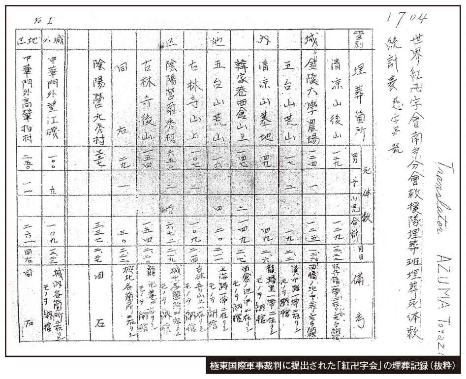
東京裁判に「虐殺の証拠」として採用された埋葬記録は、『崇善堂』（一一万二二六一体）と「世界紅卍字会」（四万三〇七一体）の合計一五万五三三二体でした。
ところが当時、崇善堂はまったく活動していなかったことを、阿羅健一氏が一九八五年八月にスクープしたことで、一一万二千余名は消滅したのです（後述参照）。その衝撃は、スクープを報道した『産経新聞』の記事の大きさが物語っています。
それは、東京裁判において、南京攻略戦総司令官・松井石根大将個人の判決で、南京での虐殺数を「一〇万人以上」と特定したので、阿羅氏のスクープによって虐殺数が「マイナス一万二二六一体」になってしまったのです。
戦死でも虐殺でも、死体のない死はありません。そこで、もう一つの埋葬記録を検証すると、中国が喧伝する「南京大虐殺」は消滅してしまいます。
まず図表の中のインチキは、十二月二十八日の「六四六八」（合計）だけ、発見場所も埋葬場所も記載されていません。そして二十八日と翌日の南京は、様々な記録を見ると大雪だったのです。
実際、「紅卍字会」が埋葬活動をしていたのは確かなことですが、当時、南京城内は「南京は十一月下旬より、遠く南方前線の戦死傷者の収容所となり、移転せる政府機関、個人の私邸まで強制的に病室に充てられ、全市医薬の香が漫したる状態なり。......入城時、外交部の建物は、大兵站病院開設せられあり、難民とともに外人の指導下にありて、数千を算する多数の患者を擁し、重傷者多し。日々、三、四十名落命しつつありたり」（第十六師団参謀長中沢三夫大佐の証言）の状態だったのです。外交部以外に開設された兵站病院の死者を合わせると、毎日、かなりの死亡者がでていたのは自然なことでしょう。
南京城内で虐殺されたと称する三〇万人は「婦女子など非戦闘員」ということになっていましたが、婦女子はほとんど記録されていません。「南京便り」二段目に「最近まで城内で一千七百九十三体、城外で三萬三百十一体を片づけた」とあり、ほとんどは城外の戦死体だったのです。

歴史を捏造すると、歴史のふるいに晒されるという一例は、次に掲載した埋葬記録が明らかにしてくれます。
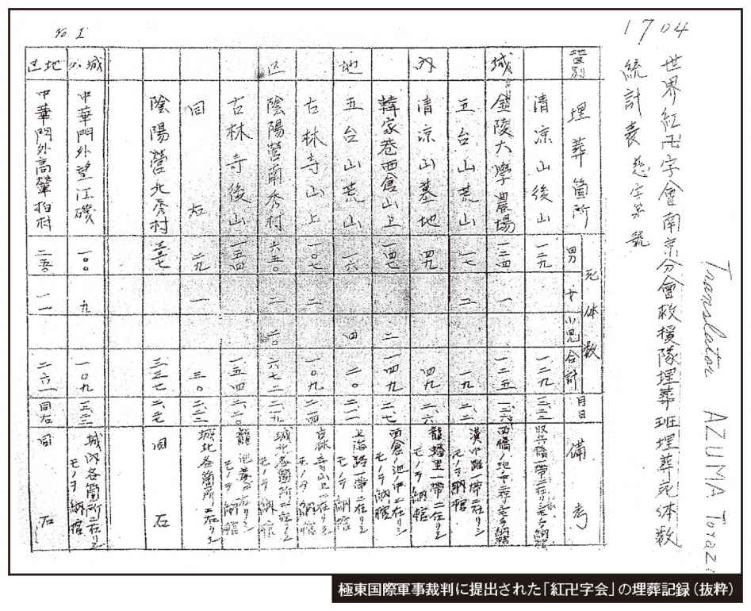
東京裁判に「虐殺の証拠」として採用された埋葬記録は、『崇善堂』（一一万二二六一体）と「世界紅卍字会」（四万三〇七一体）の合計一五万五三三二体でした。
ところが当時、崇善堂はまったく活動していなかったことを、阿羅健一氏が一九八五年八月にスクープしたことで、一一万二千余名は消滅したのです（後述参照）。その衝撃は、スクープを報道した『産経新聞』の記事の大きさが物語っています。
それは、東京裁判において、南京攻略戦総司令官・松井石根大将個人の判決で、南京での虐殺数を「一〇万人以上」と特定したので、阿羅氏のスクープによって虐殺数が「マイナス一万二二六一体」になってしまったのです。
戦死でも虐殺でも、死体のない死はありません。そこで、もう一つの埋葬記録を検証すると、中国が喧伝する「南京大虐殺」は消滅してしまいます。
まず図表の中のインチキは、十二月二十八日の「六四六八」（合計）だけ、発見場所も埋葬場所も記載されていません。そして二十八日と翌日の南京は、様々な記録を見ると大雪だったのです。
実際、「紅卍字会」が埋葬活動をしていたのは確かなことですが、当時、南京城内は「南京は十一月下旬より、遠く南方前線の戦死傷者の収容所となり、移転せる政府機関、個人の私邸まで強制的に病室に充てられ、全市医薬の香が漫したる状態なり。......入城時、外交部の建物は、大兵站病院開設せられあり、難民とともに外人の指導下にありて、数千を算する多数の患者を擁し、重傷者多し。日々、三、四十名落命しつつありたり」（第十六師団参謀長中沢三夫大佐の証言）の状態だったのです。外交部以外に開設された兵站病院の死者を合わせると、毎日、かなりの死亡者がでていたのは自然なことでしょう。
南京城内で虐殺されたと称する三〇万人は「婦女子など非戦闘員」ということになっていましたが、婦女子はほとんど記録されていません。「南京便り」二段目に「最近まで城内で一千七百九十三体、城外で三萬三百十一体を片づけた」とあり、ほとんどは城外の戦死体だったのです。
「南京大虐殺」の嘘は一九八五年に明らかになっていた
そもそも我が国の南京問題の研究者が、功名心にとらわれることなく、このスクープ記事を正当に評価し、「南京大虐殺」を否定する枕ことばに使用していたら、「南京大虐殺」の嘘のほとんどは終結していたのです。
「南京大虐殺」の政治宣伝本『戦争とは何か＝中国における日本軍の暴虐』は一九三八年、『マンチェスター・ガーディアン』紙の記者ティンパーリーが、中国から金をもらって書いた「政治宣伝工作本」だったことが明らかになっています。
それは、北村稔立命館大学教授が、中国国民党中央宣伝部国際宣伝処長・曾虚白の『自伝』に、「我々は手始めに、金を使ってティンパーリー本人とティンパーリー経由でスマイスに依頼して、日本軍の南京大虐殺の目撃記録として二冊の本を書いて貰い、印刷して発行する事に決定した......二つの書物は、売れ行きの良い書物となり、宣伝の目的を達成した」と記していたことを明らかにしております。
また『戦争とは何か？』は、一九三八年七月に中国語に翻訳され、『外人目賭中之日軍暴行』のタイトルで出版されました。この序文を書いていた人物は、日中国交正常化（一九七二年）後に「日中友好協会名誉会長」に就任していた郭沫若だったのです。
前述で明らかにした、日中国交正常化直前に出版された政治宣伝本『中国の日本軍』（本多勝一著）の推薦文にも、郭沫若の同書の序文が転載されています。
【南京問題参考書籍】■『「南京事件」の総括』（田中正明著、小学館文庫）
■『「南京事件」日本人48人の証言』（阿羅健一著、小学館文庫）
■『南京の実相』（日本の前途と歴史教育を考える議員の会監修、日新報道）
そもそも我が国の南京問題の研究者が、功名心にとらわれることなく、このスクープ記事を正当に評価し、「南京大虐殺」を否定する枕ことばに使用していたら、「南京大虐殺」の嘘のほとんどは終結していたのです。
「南京大虐殺」の政治宣伝本『戦争とは何か＝中国における日本軍の暴虐』は一九三八年、『マンチェスター・ガーディアン』紙の記者ティンパーリーが、中国から金をもらって書いた「政治宣伝工作本」だったことが明らかになっています。
それは、北村稔立命館大学教授が、中国国民党中央宣伝部国際宣伝処長・曾虚白の『自伝』に、「我々は手始めに、金を使ってティンパーリー本人とティンパーリー経由でスマイスに依頼して、日本軍の南京大虐殺の目撃記録として二冊の本を書いて貰い、印刷して発行する事に決定した......二つの書物は、売れ行きの良い書物となり、宣伝の目的を達成した」と記していたことを明らかにしております。
また『戦争とは何か？』は、一九三八年七月に中国語に翻訳され、『外人目賭中之日軍暴行』のタイトルで出版されました。この序文を書いていた人物は、日中国交正常化（一九七二年）後に「日中友好協会名誉会長」に就任していた郭沫若だったのです。
前述で明らかにした、日中国交正常化直前に出版された政治宣伝本『中国の日本軍』（本多勝一著）の推薦文にも、郭沫若の同書の序文が転載されています。
【南京問題参考書籍】■『「南京事件」の総括』（田中正明著、小学館文庫）
■『「南京事件」日本人48人の証言』（阿羅健一著、小学館文庫）
■『南京の実相』（日本の前途と歴史教育を考える議員の会監修、日新報道）
「南京大虐殺」の証拠と大騒ぎした「郵便袋虐殺事件」は最高裁判所で捏造が確定
この裁判は、南京城内で中国人を郵便袋に入れ、手榴弾を縛りつけ、池に放り込んで虐殺した、と同じ小隊の東史郎に書かれた橋本小隊長が「私はしていない」と、一九九三年四月に東京地裁に東史郎などを提訴した裁判でした。
訴訟支援に加わっていた筆者は、被告側が地裁に提出した郵便袋のサイズより五センチ大きく作って、実証実験したものを一九九八年五月に高裁に提出しました。写真がその袋です。
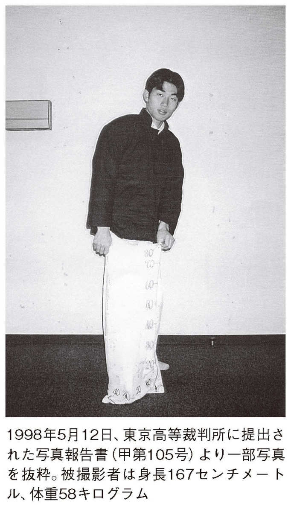
これも笑い話になりますが、約三年間も地裁で争った「郵便袋に大人が入るか否か」は、原寸で作ってみたら片足しか入らなかったのです。
高裁判決の「物理的に不可能」との文言は、この写真報告書を援用したものでした。そして、二〇〇〇年一月二十一日、最高裁に於いても被告側・東史郎の敗訴が確定したのです。
この裁判については、拙著『「反日」包囲網の正体』（ＰＨＰ研究所）を参照ください。
松井石根大将はＡ級戦犯ではなかった
仮にホロコーストに比肩する「南京大虐殺」が事実であれば、松井大将はＡ級（Ａ項）戦犯の訴因「平和に対する罪」で有罪になったはずです。ところがご覧のように、訴因の内容すべてにおいて無罪だったのです。ホロコーストに比肩する「南京大虐殺」はなく、東京裁判が嘘だと証明されたことになるのです。
松井大将は、「通例の戦争犯罪」（ＢＣ級）の訴因五五項目の一つだけで戦犯になっていたのです。東京裁判の判決では、松井大将はＢＣ級（ＢＣ項）戦犯になっているのです。
『朝日新聞』も犠牲者数は特定できない
二〇〇七年一月、自民党歴史議連（中山成彬会長）は「南京問題の検証」を開始しました。
その検証作業に筆者と阿羅健一氏も参加することになり、日中国交正常化以降、中国と一体化して「南京大虐殺キャンペーン」を張っていた『朝日新聞』の基本的な姿勢を聞いておく必要があると判断し、質問をしました。対する『朝日新聞』が正式な回答として送ってきたのが、ここに掲載した文書です。
『朝日新聞』が、「南京大虐殺」の犠牲者数を「特定していない」と回答したことで、虐殺数は「ゼロ」もあり得ることを認めたことになるのです。
慰安婦問題、動かぬ証拠
現在、ソウル日本大使館前に異様な彫像が設置されています。それは、日本政府に「謝罪」と「賠償」を求めて二十四時間訴えかける意味合いで、二〇一一年十二月十四日に除幕式が行われた慰安婦像のことです。
そもそも「従軍慰安婦問題」は、『朝日ジャーナル』に一九八八年五月から十二月まで隔週で一五回に亘って掲載された「日本国は朝鮮と朝鮮人に公式陳謝せよ」との意見広告からスタートし、同誌の記事になり、それが『朝日新聞』の「慰安婦キャンペーン」へ波及していったのです。ところが、慰安婦の「強要・強制」を示す記録は一切ありません。
それにもかかわらず、慰安婦と『朝日新聞』のキャンペーンが奏功して、一九九〇年に韓国へ九九五億九〇〇〇万円もの援助が行われたのです。
この援助は、ソウルオリンピック後の韓国経済の落ち込みを助ける緊急援助でした。その後、韓国経済が危機的な状況になると、必ず慰安婦問題が出てくるようになります。
アメリカにも「従軍慰安婦」の碑が
二〇〇七年七月三十一日、在米韓国人のロビー活動が奏功して、米国下院本会議で「従軍慰安婦問題の対日謝罪要求決議案」が可決されました。これに勢いづき、韓国人が三六％居住しているニュージャージー州パリセイズパーク市の図書館前に、「日本軍従軍慰安婦の碑」が設置されたのです。
大理石の碑文には「一九三〇年代から四五年まで日本帝国主義の軍隊に踏みにじられた二〇万人の女性と少女を称える......慰安婦とされた人々は想像することもできない残酷な人権侵害にあった......私たちは人類に対するこの残虐な犯罪を決して忘れてはいけない」という言葉が、慰安婦の姿とともに刻まれています。
今後、ニューヨークやロサンゼルスなど、全米二〇カ所に慰安婦碑の設置が計画されています。この流れを阻止しなければ、在米邦人の子供たちが、過激な「いじめ」に遭遇することが懸念されます。
慰安婦への「謝罪・賠償」宣伝が米紙に続々掲載
二〇一一年十二月二十九日の『ウォールストリート・ジャーナル』に続き、二〇一二年五月二十九日には『ニューヨーク・タイムズ』に「覚えていますか？」とのタイトルで、また慰安婦「謝罪・賠償」の全面広告が掲載されました。
これらの謝罪広告は、日本政府がまだ正式な謝罪や賠償をしていないと訴えています。この宣伝戦略は、緻密に計算されています。
しかし日本政府は謝罪を繰り返しており、準政府機関の「アジア女性基金」を税金で設立し、総理大臣の手紙付きで元慰安婦個々に見舞金をすでに支払っています。
そこで日本からの援助を実現する手段として、ドイツ政府のユダヤ人ホロコーストへの対応を、日本政府の慰安婦問題に援用するという戦略を実施しているのです。
日本政府は過去、何度となく韓国政府に騙されています。一九九八年、韓国経済が破綻したとき、金大中大統領は日本に歴史問題終結宣言を持ち出し、一兆数千億円の巨額な援助をものにしました。
韓国では売春を求めるデモや集会が繰り返されている
儒教国家の韓国は、性道徳と貞操観を厳しくすることを理想として、一九六一年に「性売買行為等防止法」を制定しました。しかしその実態は、世界に類例のない、一〇〇〇人に及ぶ「売春させてください」と叫ぶデモや集会となって表れています。
韓国の「妓生」の歴史は古く、李朝時代には妓生庁に官妓が置かれていたくらいです。
韓国では、政府が一九五〇年に「連合軍"慰安所"五カ所を新・旧馬山に設置」したり、一九五〇年代に韓国陸軍本部が「ソウルと江陵など四カ所で慰安所を運営」していました。
また同防止法が制定されたあとも、外貨を稼ぐために米軍用の「テキサス村」（売春施設）を認めて、保健所が週一回性病などの検査を強制していたのです。
一九七〇年代になって米軍が急激に減ったのちは、外貨を稼ぐターゲットが日本人男性に向けられ、「キーセン観光」と称して多くの男性が韓国へ遊びに行っていた時代もありました。
ここに掲載した写真は、二〇〇四年に韓国で施行された「性売買特別法」によって取り締まりが強化され、それに反対する「売春従事者」が街に溢れている姿なのです。
一〇万人以上もの韓国人女性が現在、世界中で売春を行い問題になっています。二〇一一年六月二十七日、米国務省は、世界の人身売買の実態をまとめた年次報告で「韓国は売春女性の供給国であり最終目的地」と認定していました。
朝鮮人娼婦の生活権に配慮していた警察署
この記事は、平壌警察署があくどい遊郭の経営者のピンハネを規制し、娼婦の生活を守るための法を平南道へ申請していたのが下り、晴れて施行できるようになったことを報じています。
これから掲載する朝鮮版『朝日新聞』を直接読んでいただければ、朝鮮半島統治時代の警察官など、公務員たちの倫理観が優れていたことが伝わってきます。
昭和八年、朝鮮半島の道議会議員の八一％は朝鮮人だった
一九三三年五月に朝鮮半島で行われた道議会議員選挙の当選者一覧です。見ての通り、八一％が朝鮮人で占められています。
たとえ朝鮮総督府の総統が日本人であっても、法律に基づいて地方行政を監視できる立場の議員の圧倒的多数が朝鮮人だったのです。
道議会議員立候補者の内訳
この記事は、先の道議会議員当選者一覧の記事から八年後の記事です。前年には、創氏改名も実施されています。朝鮮人と内地人の内訳が出ていますが、立候補者は朝鮮人七百二十七名、内地人六十九名だったことがわかります。また、議員だけでなく知事・判事・検事・警察署長・警察官・教員・総督府の役人など、ありとあらゆるところに多くの朝鮮人が働いていました。
また市町村レベルの選挙も、総じて朝鮮人と日本人の当選者の比率は同じでした。
南総統は朝鮮人の声を真摯に聞いていた
筆者の先輩に、南総統時代にソウル中学を卒業された方がいました。
その先輩から、「白い朝鮮服を着て、馬にまたがった南総統の写真が新聞に載ったり、朝鮮人に日本式の「創氏」を許可したり、当時、朝鮮半島にいた日本人は創氏改名に反対していた」と聞きました。
記事を読むと、驚くほど朝鮮民衆の声に耳を傾けていたことが分かります。
それを物語るのは「氏の創設は自由 強制と誤解するな 総督から注意を促す」（一九四〇年三月六日）との朝鮮版『朝日新聞』の記事です。
貴婦人を装って誘拐していた朝鮮人
筆者は、大正四年（一九一五年）から昭和二十年（一九四五年）まで、拉致誘拐事件など「戦後日本人の犯罪」といわれつづけてきた記事を二年以上かけてすべて通読しましたが、拉致誘拐犯のすべては朝鮮人でした。
この記事でも、小娘二八名を誘拐した犯人は朝鮮人の女性だったことが報道されています。
ここから拉致誘拐記事を並べますので、直接読んでいただければ、当時の朝鮮半島の様子が目に浮かんでくることでしょう。
戦前の朝鮮半島で娼婦の衛生面にも気を使っていた警察官
きれい好きな日本人の特性がよく表れている記事です。日本が統治する前の朝鮮半島は、側溝に糞尿を垂れ流していて、臭くてたまらなかったそうです。我が国は、朝鮮半島を近代都市化するためのインフラ整備に尽力しました。
一九三八年十二月十一日付の『朝日新聞』西北鮮版に「平壌の臭気一掃愈糞尿地下タンク新設」の記事があります。幅四メートル、長さ六〇メートルのものを一〇個も新設したのです。
現在、韓国では、二〇〇五年に「親日反民族行為者財産の国家帰属に関する特別法」が施行され、日本人が関わったものを排斥することを実施しています。かつて日本が朝鮮半島に五〇〇〇キロもの鉄道を整備したことで、それも廃止することを検討しているのか、興味のあるところです。
また現在、国際的な港になった釜山や日本人拉致の基地になっていた清津港などの近代化も、ことごとく日本が整備したのです。朝鮮半島に電車が走ったのは一九三八年でしたが、北海道に電車が走ったのは一九六八年でした。
戦後、韓国に残し資産の請求権は国際法上認められていましたが、一九六五年の日韓基本条約で、相互にすべての請求権を放棄して、国交を回復しました。いまさら慰安婦の賠償を要求してくるなど、言語道断なのです。
目的のために歴史史料を歪曲した『朝日新聞』
朝鮮版『朝日新聞』で、悪徳朝鮮人業者の犯罪を報じていた『朝日』は、一九九二年一月十一日の朝刊一面トップでこの「軍慰安所従業婦等募集二関スル件」を歪曲し、「募集含め統制」と、いかにも日本軍が慰安婦募集に直接関与していた証拠として取り上げていたのです。
見ての通り、事実は「......募集の方法誘拐に類し警察当局に検挙取調を受くるものある等注意を要す......社会問題上遺漏なき様配慮」せよ、というものでした。
日本軍の「良識的な関与」を、あたかも軍が「強制」に関与したかのように報じるテクニックは、白を黒と言いくるめる中国の常套手段そのものです。
最近、『朝日新聞』の若い記者と話す機会があるのですが、自社の過去の記事に批判的な人も出てきています。
警察は不正業者を徹底的に取り締まっていた
慰安婦問題に関しては、いまや捏造された歴史認識が教科書の検定までパスして、大手を振って掲載されるようになっています。
「息を吐くように嘘を吐く」とは、インターネットに散見される韓国人に対する意見ですが、事実確認ができていない歴史認識を、教科書に載せている国は異常です。
この記事には続報があり、次に掲載してあります。
一〇〇人以上が誘拐され、中国や満州方面に売り飛ばされていたとなると、韓国が声高に叫んでいる強制連行の犯人は皆、朝鮮人だったことになります。
在日韓国人や朝鮮人の方々にも読んでいただけるように、当時の『東亜日報』も掲載しました。目を通して厳しく歴史と向き合っていただけることを願っております。
マスメディアにはびこる「報道しない自由」
ここまで通読された方は、『朝日新聞』を中心とするマスメディアの「報道しない自由」が、現実にあることに気づかれたと思います。とりわけ罪が重いのは、本書に掲載した記事を紙面で発表していたら日本の名誉を護れたにもかわわらず、だんまりを決め込み、よりによって『私の戦争犯罪 朝鮮人強制連行』（一九八三年）を事実の裏もとらず取り上げ、一九九二年一月二十三日付夕刊で著者の吉田清治氏をスターに祭り上げたことです。
犯罪の温床を徹底的に改善していた警察
この記事は、拉致・誘拐事件を予防するため、警察が徹底的に調査していたことを報じています。
『朝日新聞』は、吉田清治氏を紹介する体裁をとり、一九九二年一月二十三日付夕刊「窓・論説委員室から」で「一つの村から三、十人と連行して警察の留置所にいれておき、予定の百人、二百人になれば下関へ運ぶ。女性達は陸軍の営庭で軍属の手に渡り前線へ送られた......」と、警察と日本軍がつるんで「慰安婦狩り」を実行していたと報道したのです。
この『朝日新聞』の記事がまったくの捏造だったにもかかわらず、『朝日』はいまだに謝罪をしていないのです。
ソウルの秘密クラブを摘発するきっかけは少女の告発だった
この記事で重要なところは、少女が警察を信頼して告発していたことです。
当時、このような少女も安心して警察に告発できる環境にあったことは、前述の「胸襟開く南統治 虚心坦懐民の声を聴く用意あり......」にある通りで、日本の統治が韓国社会によい影響を与えていたことが窺える記事です。
当時も現在と変わらない秘密クラブが、都会の闇に紛れてあったことは驚きです。『朝日新聞』の読者の方は、これらの犠牲者を救っていたのが、警察だったことに驚くと思います。
朝鮮人の拉致誘拐犯は南洋方面にも女性たちを売り飛ばしていた
様々な朝鮮人による拉致誘拐犯の実態が分かる記事を提示してきましたが、これはちょっと趣が違います。
官印偽造や公文書を偽造し、行使までしていたのは、朝鮮人の拉致誘拐犯だったというものです。
この記事が掲載されていた紙面には「渡航証明書を偽造し 不適 巨利を博す 悪運つきて遂に捕へらる」との記述もあり、朝鮮人の犯罪が巧妙になりつつあることを報じています。
金日成も日本人を拉致していた
いまだ日本に帰れない横田めぐみさんたちが北朝鮮に拉致・誘拐されたのは、金日成が権勢を振るっていた一九七〇年代です。朝鮮半島での「拉致誘拐」は、伝統的な犯罪かと思わせるような記事です。
この記事は、（「誘拐」ではなく）「拉致」という見出しの文言が目に飛び込んできました。
そして、内容を読み始めて二度ビックリ、何とあの金日成が一四〇名を拉致し、その中に日本人も入っていたのでした。
朝鮮半島では戦前から、外国人を拉致監禁することが常態化していたことを示すこの記事は、現代日本人が朝鮮半島を認識するうえで問題提起してくれる貴重な記事と判断し、掲載しました。
本書に掲載した拉致誘拐事件の記事は現在、韓国が問題にしている「慰安婦の強制連行」の時期である一九三〇年代から一九四五年八月までを問題にしていますので、その期間のものを「厳選」して掲載しました。
若い女性まで誘拐に手を染めていた
いままで業者の拉致誘拐事件を提示してきましたが、朝鮮版『朝日新聞』には、目を疑うような監禁事件も散見されます。
この記事は、若い女性の個人的動機からの犯罪ですが、オウム真理教と同じようなカルト宗教の犯罪も、戦前の朝鮮半島で勃発していました。
一九三九年四月一日付『朝日新聞』南鮮版には、「戦慄の『白々教』予審漸く終結」〈世界犯罪史上かつて見ざるべき残虐凶暴のかぎりをつくし三百九名の信者を殺害し、一世を震撼せしめた邪教白々教事件は母紙所報の通り三十一日予審終結、公判に回付された〉とあります。
このような宗教関係の拉致監禁事件の記事も朝鮮版『朝日新聞』には散見されますが、直接、慰安婦関係に関わるものでないので掲載しませんでした。ただ拉致誘拐の観点から見ると、朝鮮半島の慣習が背景にあるように思えてなりません。
拉致誘拐事件に偽刑事も現れる
朝鮮人慰安婦の証言には、「警官に連れて行かれ慰安婦にされた」などもありました。それらの証言は場所や日時が特定できない、いい加減なものがほとんどです。
ところが朝鮮人慰安婦の場合、「私は被害者だ」と開き直られると、普通の常識をもつほとんどの日本人は動揺して黙ってしまいます。
そのような日本人の弱点を承知で、証言まで捏造しているのでしょうが、この記事のような当時の朝鮮半島の実態を知識として持ち合わせていれば、必ずや嘘を見抜けるようになると思っています。
貧しい田舎娘が悪徳業者のターゲットに
悪徳業者に誘拐された以外にも、貧しさゆえ親によって娼妓として売られた実例は、我が国にもたくさんあったことですが、朝鮮人にもたくさんいたことが歴史からすっぽり消えてしまったのは、おかしな話です。
そのような実態を知らなければ、歴史の真相がわからなくなってしまいます。その実態は、米軍によるビルマ（ミャンマー）での尋問調書（一九四四年十月一日）に詳述されています。
それは、朝鮮人慰安婦二〇名と慰安所経営者二名から成り立っています。
冒頭に「慰安婦とは軍人のための売春婦」との解説からはじまり、〈彼女たちは民間業者の募集広告に応募し、二〇〇～三〇〇円の前払い報酬を受領し......駐屯地近くの町々に送られている。労働条件は「一人一部屋」「食事は経営者が用意」、そして将兵とともにスポーツをして楽しんだりピクニックや娯楽、夕食会に参加した。彼女らは蓄音機をもっており、町に買い物に出ることも許されていた...負債を弁償した慰安婦は、帰国することもできた......売り上げの五〇～六〇％は慰安所経営者が受け取っていた。......客を断る特権を与えられていた。......収入も当時の二等兵の月給七円五〇銭、軍曹が約三〇円の時代に平均一〇〇〇円近くの収入があった〉。これが戦場の慰安婦の実態だったのです。
当時の治安状況が把握できる調査記事
朝鮮版『朝日新聞』の記事を通読して、当時治安に対する意識はいかなるものだったのか。その答えを出してくれるのがこの記事です。
路上での「喧嘩」や女子生徒に対する「話しかけ」を、被害としてカウントしていました。新宿や渋谷を若い女性が歩いていると、場所によっては一〇メートルごとに「ナンパ」（話しかけ）されている状況より、ずっとのどかな時代だったようです。
若者の精神性を破壊する教科書
「慰安所」は、あくまでも民間業者が軍隊に付随して運営していたものです。それを日本軍が設置と管理に関わったように記述した高校教科書は、百害あって一利もありません。それは皆様にも納得していただけると思います。
そもそも、なぜ軍隊につきものの「慰安」に関することで、歌手や劇団など様々あるなかで慰安婦だけを記述するのか。それは我が国の精神性を、時間をかけて内部から崩壊させようと策している深謀遠慮なのです。
「......日本の植民地や占領地では、朝鮮人や中国人・フィリピン人・ベトナム人・オランダ人など、多数の女性が『慰安婦』にかりだされた。慰安所は、中国・香港・シンガポール・オランダ領東インドから、日本の沖縄諸島・北海道・樺太などにまでおよんだ」（東京書籍『日本史Ａ』）
「植民地や占領地では、日本軍も設置や監理に関与した慰安所に、朝鮮人を中心に、中国人・インドネシア人・フィリピン人・オランダ人などの多数の女性を、日本軍兵士の性の相手である慰安婦として動員した」（実教出版『日本史Ａ』）
「......また、慰安婦として現地の慰安施設で働かされた女性たちもいた」（山川出版社『日本史Ａ』）
「......また、朝鮮人を中心とした多くの女性が慰安婦として戦地に送られた」（第一学習社『日本史Ａ』）
「......戦地に設置された『慰安施設』には、朝鮮・中国・フィリピンなどから女性が集められた（いわゆる従軍慰安婦）」（山川出版社『日本史Ｂ』）
このような教科書で教育された若者が、自分たちの国に誇りを持てる訳がありません。「戦地に送られた」などと、日本政府が強制的に送っていたような表現で言葉のマジックを使っているのは犯罪です。
ここから数枚、韓国が「強制連行の期間中」と喧伝している『東亜日報』の記事を掲載しますので、ハングルを読める方は是非、一読して歴史の真相を見極めてください。
（翻訳）
戸籍を偽造
醜業を強制
悪魔のような遊郭業者の所業
犯人は警察に逮捕
市内の百四軒一七八番地に住む呉正渙という男が、漢南楼という称号で娼妓営業をしていた先月の五日、慶南（現在の慶尚南道）山清邑内で朴福南という十六歳の少女を三五〇ウォンで買ったとされる事件で、呉は少女が営業可能な年齢に達していないことを知り、朴福南の姉・朴順南の戸籍を利用して営業許可を取って働かせていたことが、所管の本町署の厳重な取り調べによって明らかになった。
この呉正渙は、娼妓業を営みながら多数の幼い少女を買うなど前述のような犯行を行なっていたと見て、今後、公文書偽造などの罪で厳重処罰する方針である。
（翻訳）
路上で少女を略取
醜業中に売り渡す
金神通を売り飛ばした男女検挙
判明した誘拐魔の手口
于濱海（三十五）に惨殺された金徳雲の娘、神通を誘拐した犯人が昨日二十八日の夜十時頃、とうとう鍾路署（ソウル市内）の司法刑事隊に捕まった。犯人は、住所不定で流浪する朴命同（三十七、仮名）と夫と子供のいる李姓女（四十一、仮名）の二人で、彼らは路上で少女たちを専門に誘拐を繰り返し、中国人らに売り飛ばした略取誘拐の前科者だった。
朴命同は府内の黄金町一丁目方面で、李姓女は府内の孔徳里方面でそれぞれ逮捕され、現在厳重な取り調べを受けている。神通を誘拐した手口は、神通が失踪した今年５月19日に犯人の朴命同が道で遊んでいる彼女を略取し、李姓女に渡したものであった。
誘拐した少女を常習的に売買していた李姓女は朴命同と共謀し、同月12日に普段からの知り合いである今回の少女惨殺事件の犯人・于濱海に二〇ウォンで売ったという。
『東亜日報』：日本統治以前の衝撃的な記事
中国には食人風俗の風習があったことは、中国の古典が伝えるところですが、朝鮮でもこの記事のようなことが、日本が統治する以前の文献に書かれていることは知っていても、昭和八年の新聞で報道されていたことは、見る者にとって衝撃的な記事です。
（翻訳）
春窮（蓄えがなくなる春）を狙った悪魔 農村に人肉商跳梁 就職の甘言で少女を誘拐 鳥山（ソウル近郊の町）でも一人が被害 錦山郡錦山面上玉里一八の楊敬順（四十三、仮名）は、錦山郡錦山面上の孔花淑（四十七）が無知であることを利用して、その娘孔連伊（十八）......
中国には食人風俗の風習があったことは、中国の古典が伝えるところですが、朝鮮でもこの記事のようなことが、日本が統治する以前の文献に書かれていることは知っていても、昭和八年の新聞で報道されていたことは、見る者にとって衝撃的な記事です。
『東亜日報』：良家の少女を誘拐して満洲に売り飛ばす寸前に逮捕
同じようなことが朝鮮版『朝日新聞』にもありましたが、これは別の事件です。
（翻訳）
良家少女を誘拐して
満洲に売り飛ばし金儲け
釜山署、犯人を逮捕
【釜山】全南郡山府開福町一丁目五八の紹介業者田斗漢（五八）は、去る十一月十五日釜山府宝永町一丁目の月星旅館で投宿していた釜山五丁目四六下村貞子（十九）と統営邑曙町二六の菅原静香（十七）の二人の少女に満洲での就職をもちかけて誘拐し、自分に親権があるかのように遊郭に売るとして委任状を偽造した。彼女らにはそれぞれ一五〇ウォンを渡し、満洲方面には数百ウォンで売り飛ばす計画で群山に連れ出すところを所管の釜山警察署が探知して逮捕し、現在厳重な取り調べを受けている。この男は、いわゆる紹介業という看板の下このような手口で良家の少女を多数誘拐売却した余罪が多いと見て追及をしている。
同じようなことが朝鮮版『朝日新聞』にもありましたが、これは別の事件です。
当時、このような事件が朝鮮半島で頻発していましたが、多く国民の知るところになれば、慰安婦問題は自然消滅していきます。その目的を達成するために、本書を企画しました。皆様のご協力をよろしくお願いいたします。
（翻訳）
悪徳紹介業者が跋扈 農村の婦女子を 誘拐被害女性が百名を超える 釜山刑事、奉天に急行
【釜山】満州の景気が非常に良くなっていると宣伝し、朝鮮の農村で生活に困っている婦女子を相手に都会の紹介業者が跋扈している。最近、釜山府内でも悪徳紹介業者45名が結託し、純真な婦女子らを言葉巧みに誘拐し、満州方面に一〇〇名以上売り飛ばしたとされる。釜山署の取り調べで、関係者として浮かび上がった奉天の紹介業者を逮捕するため、ユ警部補以下刑事６名が奉天に急行した。同犯人を逮捕すれば悪魔のような彼らの活動経緯がすべて暴露されると見られている。
「慰安婦問題」を乗り越えなければ日本精神は消滅してしまう
「慰安婦問題」を、一九九二年の『朝日新聞』の記事とソウル日本大使館前の慰安婦デモが水面下で連動した遠大な国際謀略と解釈すると、この二十年間、坂道を転げ落ちるように「日本精神」が溶け出したことと符合しています。
日本精神を消滅させないための方策は、さほど難しいことではありません。それは、日本人が冷静沈着に自らの歴史を、是々非々で探求することに他なりません。
韓国が要求する「慰安婦問題」は、時代とともに変遷しており、我が国からの支援目的以外に、我が国を踏み台にして世界での存在感を勝ち取るための道具の役割も与えられたことが、最近の米国の活動に表れています。
これはまさに「情報戦」そのものになっています。
韓国は「慰安婦の被害を立証できないのは日本のせい」と息巻いていますが、実際に被害がないものを立証できるわけがありません。
本書に掲載した『東亜日報』の記事だけで、朝鮮半島における拉致誘拐は朝鮮人の犯罪だったことが明らかです。
朝鮮半島の日常を、大正四年（一九一五年）から昭和二十年（一九四五年）までの朝鮮版『朝日新聞』で確認した者として断言できるのは、「慰安婦」の強制連行などありえない、ということです。
確信をもって断言できるのは、現在の眼鏡から、それぞれの時代の眼鏡に変えて歴史を見ることができるようになったからです。
それを可能せしめるには、当時の新聞を昨日の新聞のように読み、感情移入することです。
皆様方にも当時の新聞を直接読んでいただき、同じ感動を共有していただければ、との思いで史料をまとめて掲載させていただきました。
『朝日新聞』四十年間の「宿痾」
今、我が国は崖っぷちに立っている状況ですが、これに危機感を抱かれている方々が、筆者のブログ（水間条項）を訪れ、国内外四八カ国から毎日一万名を超えるようになっております。
我が国に蔓延している閉塞感の根元的な要因は、国民が『朝日新聞』に「クオリティ・ペーパー」としての信頼を寄せていることから派生しています。
国民は『朝日新聞』を、戦前・戦後・現在まで同じ新聞社だと見ていると思います。ここに、我が国が不幸になった遠因があるのです。
『朝日新聞』では、ＧＨＱ占領下の一九四五年十一月に、オーナーの村山長挙社長と幹部全員が一緒に退任しましたが、一九五一年に村山氏は会長として復帰しました。
それが一九六八年、朝日新聞社内で勃発した組合側のクーデターによって、村山長挙氏は退任させられ、明治以来の伝統はここでついえたのです。
村山氏のあとを引き継いだ広岡知男氏は一九七〇年三月、朝日新聞社の株主総会をすっぽかし、日中覚書貿易交渉日本側代表の一員として一カ月間、中国に滞在していました。
そして帰国後、広岡知男社長は朝日新聞社の幹部を前に、「中国文化大革命という歴史の証人として、我が社だけでも踏みとどまるべきである。そのためには向こうのデメリットな部分が多少あっても目をつぶって、メリットのある部分を書くこともやむ得ない」（『朝日新聞血風録』稲垣武著）と訓示を述べていたのです。
そのときの訓示から現在まで終始一貫した、朝日新聞社の基本的な姿勢が、「朝日の知性」を代表していた『朝日ジャーナル』（一九七一年三月十九日号）に宣言してありました。
余談ですが、当時『朝日ジャーナル』は、男子学生が内容を理解できなくとも小脇にかかえているだけで女子学生にもてると云われていた「インテリ雑誌」だったのです。
その宣言とは、「朝日は赤くなければ朝日ではないのだ」「アカイ アカイ アサヒ アサヒ......サァ行くゾ」とあり、ページをめくると「サテ今度は......ドコを乗取ろうかナ？」と、『朝日新聞』のこの四十年間の悪行を見事に表現しているのです。
当時、芸術の香りが漂う表紙だった『朝日ジャーナル』が突然、写真のような猥褻雑誌に変わったことに驚いたものですが、当時は「この号だけの冗談か」と思っていました。
しかしその後、「アカイ アサヒ」の宣言通り、同年八月から本紙で「中国の旅」の連載がはじまり、戦後忘れられていた「南京大虐殺」に火をつけ、一九九二年には「慰安婦問題」にも火をつけたり「靖国神社公式参拝問題」や「遺棄化学兵器問題」など、日中・日韓の政治問題の火つけ役として「活躍」していたのはこの新聞でした。
そして『朝日ジャーナル』の表紙が示した通り、日本はコンビニで猥褻雑誌が普通に売られる社会に変貌したのです。
この変貌を予言していた方がいました。
その方は、『朝日新聞』創立者の一人娘・村山藤子さんです。
村山藤子さんは、『朝日新聞』が狂ったように中国を擁護した連載「中国の旅」の終了後、「私は、新・朝日新聞というのがつくれたら、一番いいだろうなと思うんですけどネ。（笑）父のやっていた昔の、ほんとの朝日新聞に戻したいんです」と『週刊サンケイ』（一九七二年一月二十一日号）のインタビューに答えています。
『朝日新聞』創立者の娘さんに『朝日新聞』は偽物、と批判されていた通り、『朝日』はこの四十年間ただひたすら、我が国を「アカイ アカイ」社会に作り替えようと邁進してきました。その結果が今の日本です。
本書は、この四十年間の「宿痾」を巻き戻す手助けとして企画されたものです。
（了）
今、我が国は崖っぷちに立っている状況ですが、これに危機感を抱かれている方々が、筆者のブログ（水間条項）を訪れ、国内外四八カ国から毎日一万名を超えるようになっております。
今まで何度となく、国家の基本法である法律が改悪されそうになったとき、ブログをご訪問くださっている皆様が、インターネットで爆発的な阻止抗議行動を実行し、様々な結果を残しています。マスメディアなにするものぞ、と思えるほどの国際的なネットワークになっています。
『水間条項』には、我が国の美しい自然と伝統文化を末永く残すために協力できる同志の方々が、たくさん集っています。時間のあるときにでも覗いていただき、我が国を護るネットワークがより巨大になればと切に願っております。
ブログ名：水間条項
ブログ・アドレス：http://mizumajyoukou.blog57.fc2.com/
あ と が き
今年は日中国交回復四十周年にあたります。
日中間の積み残した荷物に対して「春一番」（南京の真実をめぐる発言）が名古屋（河村たかし市長）から吹き、四月にはワシントンから「尖閣購入（石原慎太郎都知事）」の嬉しい便りが届けられ、日本中が尖閣の話題一色になっておりました。
これら二つの懸案は、現在の政治不信を象徴するかのようにくすぶり続けてきましたが、石原慎太郎東京都知事の決断と行動力で、一気に我が国の閉塞感もまとめて吹き飛ぶ状況になりつつあります。
これらの状況を踏まえ、緊急に企画したのが本書です。これに先立って考えていたことは、なぜ、革新左翼の弱体化と歩調を合わせるように保守派も弱体化してしまったのか、との自問でした。
そこで出した答えは、それぞれが自分本位で行動していたことに根本的な原因があったことを反省し、発想を転換する必要があるというものでした。
ある地方のお医者さんから、発想を転換する上でのヒントをいただきました。それは「『南京の実相』を病院の待合室に置こうと手に入れたのですが、もう少し誰にでも分かるようにしたものが欲しいです」とのメールでした。それをきっかけに考えた結果、「読む」ことと「見る」ことを逆転させた本をつくれたら、誰にでも分かるものになるとの確信を得ました。このような、難しい企画を受け入れていただいたＰＨＰ研究所の白地利成氏には、この場をお借りして深甚の謝意を表する次第です。
また、本書を出版するにあたって阿羅健一氏、故佐藤振寿氏、佐藤忠士氏、高花豊氏、森本町子氏には、資料集め整理など、大変お世話になったことにあらためて感謝とお礼を申し上げさせていただきます。
〈著者紹介〉
水間政憲（みずま まさのり）
近現代史研究家・ジャーナリスト
１９５０年、北海道生まれ。慶應義塾大学法学部政治学科中退。近現代史（ＧＨＱ占領下の政治・文化）の捏造史観に焦点を絞り、テレビ・新聞報道の反証を一次史料に基づき調査研究する。『正論』（２００６年６月号）に「スクープ"遺棄化学兵器"は中国に引き渡されていた」（第１弾）を発表。その後、第10弾まで寄稿し、戸井田徹衆議院議員（当時）などとの連携により、国会で中国や外務省の矛盾点を追及する。著書に『朝日新聞が報道した「日韓併合」の真実』（徳間書店）、『いまこそ日本人が知っておくべき「領土問題」の真実』『「反日」包囲網の正体』（以上、ＰＨＰ研究所）などがある。
水間政憲（みずま まさのり）
近現代史研究家・ジャーナリスト
１９５０年、北海道生まれ。慶應義塾大学法学部政治学科中退。近現代史（ＧＨＱ占領下の政治・文化）の捏造史観に焦点を絞り、テレビ・新聞報道の反証を一次史料に基づき調査研究する。『正論』（２００６年６月号）に「スクープ"遺棄化学兵器"は中国に引き渡されていた」（第１弾）を発表。その後、第10弾まで寄稿し、戸井田徹衆議院議員（当時）などとの連携により、国会で中国や外務省の矛盾点を追及する。著書に『朝日新聞が報道した「日韓併合」の真実』（徳間書店）、『いまこそ日本人が知っておくべき「領土問題」の真実』『「反日」包囲網の正体』（以上、ＰＨＰ研究所）などがある。
ひと目でわかる日韓・日中 歴史の真実
著 者：水間政憲 Masanori Mizuma
Masanori Mizuma
発行所：株式会社ＰＨＰ研究所東京都江東区豊洲五丁目六番五二号
〒135-8137
http://www.php.co.jp/digital/製作日：二〇一六年八月二十二日
著 者：水間政憲
Masanori Mizumaこの電子書籍は『ひと目でわかる日韓・日中 歴史の真実』二〇一二年七月二十五日第一版第一刷発行を底本としています。
電子書籍版
発行者：清水卓智
発行所：株式会社ＰＨＰ研究所東京都江東区豊洲五丁目六番五二号
〒135-8137
http://www.php.co.jp/digital/製作日：二〇一六年八月二十二日
本書の無断複写（コピー）は著作権法上での例外を除き、禁じられています。